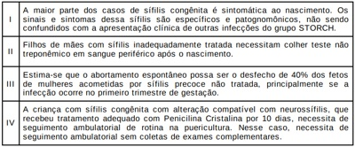
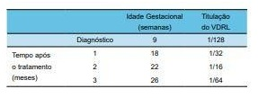
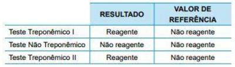

Questão 1 · Monitorização pós tratamento · Diagnóstico da síf ilis · 4000185777Assinale a alternativa incorreta sobre sífilis na gestação:
A A penicilina benzatina é a única opção segura e eficaz para o tratamento de sífilis na gestante.
B O VDRL é o método de escolha para triagem diagnóstica.
C O tratamento deve ser iniciado com apenas um teste reagente, treponêmico ou não, sem aguardar o resultado do segundo teste.
D O Fta-Abs é um teste treponêmico utilizado para monitoramento da resposta ao tratamento.
Questão 2 · Sif ilis na gestação · Obstetrícia · 4000185519Paciente procura a Maternidade, insegura com a orientação recebida na Unidade Básica de Saúde (UBS) onde realiza o pré- natal de risco habitual. Apresentou VDRL reativo até 1/16 e teste rápido para treponema positivo, sem histórico de tratamento prévio; foi solicitado o VDRL para o parceiro que veio negativo e a recomendação foi de que só ela deveria tratar já que o parceiro não apresentava sí lis. Considerando o diagnóstico de sí lis para a paciente e iniciando logo seu tratamento, assinale a conduta CORRETA em relação a seu parceiro sexual.
A Realizar um teste treponêmico e só tratar se o teste for positivo
B Repetir o teste não-treponêmico e só tratar se o novo teste for positivo
C Realizar um teste treponêmico e tratar como sífilis, independentemente do resultado do teste. A dose preconizada vai diferir se o teste for positivo ou negativo
D Considerar que a sífilis foi excluída e que não precisa tratar
Questão 3 · Sif ilis na gestação · Obstetrícia · 4000184715Primigesta na 14° semana de gestação com VDRL 1:8, assintomática, sem tratamento anterior para sí lis, comparece para a sua segunda consulta de pré-natal em uma Unidade Básica de Saúde. Ao receber a receita, refere que é alérgica à penicilina. Nesses casos, a conduta adequada a ser realizada é:
A Realizar dessensibilização e tratar com Penicilina G Benzatina 2,4 milhões de UI/ IM por semana, durante 3 semanas, com controle quantitativo com teste não treponêmico mensal até o nascimento.
B Considerar paciente portadora de sífilis primária. Realizar dessensibilização e tratar com Penicilina G Benzatina, 2,4 milhões de UI/IM, com controle quantitativo com teste treponêmico trimestral até o final da gravidez.
C O tratamento diante nessas situações é eficaz para não ocorrer transmissão vertical com o uso de Ceftriaxona IV, uma vez ao dia, durante 14 dias.
D No momento não tratar, solicitar testes treponêmicos e não treponêmicos para afastar a possibilidade de cicatriz sorológica.
Questão 4 · Sif ilis na gestação · Obstetrícia · 4000184055Caso 5 Carla é gestante e, com 13 semanas de gestação, iniciou pré-natal com enfermeira da Equipe de Saúde da Família. Na primeira consulta, apresentou resultado positivo para sí lis em teste rápido. Nega exames ou tratamento prévios. Exame clínico sem alterações. No momento da abertura do pré-natal, o caso de sí lis foi noti cado à Vigilância e a enfermeira prescreveu penicilina benzatina, 2,4 milhões UI por semana, durante 3 semanas. A paciente refere que teve duas parcerias sexuais no último ano: Mateus, de quem está grávida e com quem não mantém mais relações sexuais há 8 semanas; e Sandro, o atual namorado, com quem iniciou relações há 3 semanas. O teste rápido de sífilis de Mateus foi positivo e o de Sandro foi negativo. Ambos sem exames ou história de tratamento prévios. Para as questões a seguir, considere as recomendações do Protocolo do Ministério da Saúde e a dose de penicilina benzatina de 2,4 milhões UI. Após a abordagem da médica, Carla passou a comparecer mais frequentemente às consultas. Com idade gestacional de 35 semanas, apresentava os seguintes resultados para o exame de VDRL: I. 13 semanas: 1:64. II. 26 semanas: 1:8. III. 32 semanas: 1:32. Qual é a conduta adequada?
A Tratar Carla com 2 doses de penicilina benzatina, com intervalo de uma semana; tratar Sandro com dose única de penicilina benzatina.
B Tratar Carla com 3 doses de penicilina benzatina, com intervalo de 1 semana; tratar Sandro com dose única de penicilina benzatina.
C Tratar Carla com 3 doses de penicilina benzatina, com intervalo de 1 semana; tratar Sandro com 3 doses de penicilina benzatina, com intervalo de 1 semana.
D Tratar Carla com dose única de penicilina benzatina; tratar Sandro com dose única de penicilina benzatina.
Revisar: possível letra faltando em enunciado
Questão 5 · Sif ilis na gestação · Obstetrícia · 4000183594Gestante de 26 anos, idade gestacional 14 semanas, assintomática, realiza teste rápido para sí lis em sua primeira consulta de pré-natal e o teste é positivo. Entre as opções abaixo, a melhor conduta para este caso é tratamento com Penicilina benzatina
A 2.400.000 UI em aplicação com intervalo de 1 semana, por 3 semanas (7.200.000 UI no total). Convocação dos parceiros sexuais para testagem e tratamento igual, caso o teste seja positivo.
B Coleta de teste treponêmico da gestante e tratamento imediato com Penicilina benzatina 2.400.000 UI em aplicação com intervalo de 1 semana, por 2 semanas (4.800.000 UI no total). Convocação dos parceiros sexuais para testagem e tratamento igual, caso o teste seja positivo.
C 2.400.000 UI em aplicação com intervalo de 1 semana, por 3 semanas (7.200.000 UI no total). Convocação dos parceiros sexuais para testagem e tratamento.
D 2.400.000 UI em aplicação com intervalo de 1 semana, por 2 semanas (4.800.000 UI no total). Convocação dos parceiros sexuais para testagem e tratamento.
E 1.200.000 UI em aplicação com intervalo de 1 semana, por 3 semanas (3.600.000 UI no total) Convocação dos parceiros sexuais para testagem e tratamento.
Questão 6 · Monitorização pós tratamento · Tratamento da síf ilis na gestação · Diagnóstico da síf ilis · 4000183567Gestante inicia seu pré-natal com 18 semanas e, na primeira consulta da UBS, realiza os testes rápidos para HIV e para sí lis. Este último mostrou resultado positivo. Como proceder?
A Tratar o casal imediatamente e solicitar e[ames confirmatórios mensalmente;
B Aguardar o teste treponêmico para confirmar diagnóstico e depois tratar;
C Se a história confirmar ser sífilis tardia, tratar a paciente com eritromicina;
D Se o teste do parceiro for negativo, não há necessidade de o mesmo ser tratado.
Questão 7 · Síf ilis congênita · 4000183462Quanto à sífilis congênita, é CORRETO afirmar que
A a presença isolada de sinais clínicos inespecíficos (ex: hepatoesplenomegalia, icterícia e petéquias) não é suficiente para ser considerado um caso sintomático de sífilis congênita, exigindo-se ao menos um sinal patognomônico da doença.
B as opções antimicrobianas atualmente recomendadas para o tratamento da gestante com diagnóstico de sífilis com a capacidade de tratamento associado do feto são a utilização de penicilina G benzatina 1.200.000 UI, dose única ou eritomicina por 10 dias.
C independente da realização ou não de tratamento adequado da mãe durante a gestação , deve ser realizada sempre a dosagem do VDRL do recém-nascido, podendo ser acrescentados outros exames laboratoriais e de imagem, a depender de cada caso.
D é indicado o uso rotineiro de Penicilina G Cristalina ou Penicilina G Procaína em recém-nascidos de mães com sífilis não tratadas ou inadequadamente tratadas durante a gestação, mesmo diante de investigação laboratorial e de imagem normais, devido ao elevado risco de sequelas.
E só deve ser realizada a coleta do LCR, quando houver indicação formal de tratamento da sífilis. Nesses casos, um LCR alterado indica prolongar o tratamento da meningite luética por mais 4 dias, totalizando 14 dias de tratamento.
Questão 8 · Sif ilis na gestação · Obstetrícia · 4000183447Paciente 18 anos de idade, na 11ª semana de gestação, veio para sua 1ª consulta de pré-natal. Na anamnese, referiu uma ferida ulcerada única, indolor e sem ardor ou secreções purulentas em lábio vaginal direito há aproximadamente 8 meses, a qual regrediu espontaneamente sem tratamento. Nessa consulta trouxe exames préconcepcionais, que chamaram a atenção pelo VDRL de 1/16. Qual a conduta adequada que o pré-natalista deve fazer?
A Penicilina benzatina – 2.400.000 UI – 2 doses.
B Penicilina benzatina – 2.400.000 UI – 1 dose.
C Penicilina benzatina – 2.400.000 UI – 3 doses.
D Penicilina benzatina – 2.400.000 UI – 4 doses.
E Não administrar penicilina pelo risco de teratogenicidade. Adiar o tratamento para o 2º trimestre.
Questão 9 · Mães adequadamente tratadas · 4000183362Primigesta com 38 semanas de idade gestacional é admitida no Centro Obstétrico. Realizou seis consultas pré-natais e não apresenta histórico de doenças prévias. Com 14 semanas de idade gestacional, apresentou VDRL de 1:64, tendo recebido três doses de Penicilina Benzatina, 2.400.000UI, com intervalo de uma semana entre cada dose. Parceiro não tratou sí lis por ter VDRL não reagente. Com 30 semanas de idade gestacional, apresentou título de VDRL de 1:16. Na admissão apresentava título de VDRL de 1:8. O parto foi vaginal e o recém-nascido (RN) é assintomático ao exame físico. Nesse caso, é correto presumir que se trata de mãe com sífilis:
A Adequadamente tratada. Solicitar VDRL em sangue periférico para o RN. Indicado tratamento para o RN com penicilina cristalina se exame reagente para qualquer titulação.
B Adequadamente tratada. Solicitar VDRL em sangue periférico para o RN. Indicado tratamento com penicilina cristalina para o RN se exame reagente com titulação pelo menos 2X maior que a materna.
C Inadequadamente tratada. Solicitar VDRL em sangue periférico para o RN. Indicado tratamento com penicilina cristalina para o RN se exame reagente com titulação pelo menos 4X maior que a materna.
D Inadequadamente tratada. Deve-se solicitar VDRL em sangue periférico para o RN, Raio-X ossos longos e coleta de líquor com pesquisa de VDRL. Indicado tratamento com penicilina cristalina para o RN com exame reagente para qualquer titulação.
Questão 10 · Sinais e sintomas · 4000183130Menino, 3 meses de idade, vem apresentando irritabilidade constante e choro intenso à manipulação. Exame físico: regular estado geral, choroso, eupneico, descorado ++/4. Abdome com fígado palpável a 3 cm do rebordo costal (RC) direito e baço a 2 cm do RC esquerdo; sem outras alterações. Exame laboratorial: VDRL positivo 1/64. Conceitualmente, qual manifestação tardia da doença ele pode apresentar?
A Pseudoparalisia de Parrot.
B Deficiência auditiva.
C Pneumonia alba.
D Síndrome nefrótica.
Questão 11 · Sif ilis na gestação · Obstetrícia · 4000181842A principal via de transmissão vertical da sífilis se dá
A pela via transplacentária.
B pela via vaginal.
C contaminação durante o parto.
D durante a amamentação
Questão 12 · Seguimento ambulatorial · 4000181714Lactente do sexo masculino de 3 meses de idade chega para consulta de rotina na Unidade Básica de Saúde. A mãe realizou prénatal adequado, sendo diagnosticada com sí lis primária no 6o mês de gestação; foi medicada com benzilpenicilina benzatina 2,4 milhões UI, intramuscular, dose única. A criança nasceu a termo, de parto vaginal, com peso de 3.050 g, comprimento de 50 cm e exame clínico normal. Na maternidade, o VDRL materno foi de 1:4 e do recém-nascido foi de 1:2. Hemograma, TGO, TGP, radiogra a de ossos longos e torácica e análise liquórica da criança não apresentaram alterações. Recebeu alta hospitalar sem nenhum tratamento medicamentoso dirigido à sí lis. Na consulta ambulatorial realizada no 1o mês de vida, foi solicitado VDRL cujo resultado foi de 1:1. De acordo com o Protocolo Clínico para Sí lis Congênita do Ministério da Saúde, nesta consulta, o médico deverá
A encerrar seguimento laboratorial.
B solicitar exame de VDRL.
C prescrever penicilina benzatina.
D pedir Teste Treponêmico.
Questão 13 · Obstetrícia · Diagnóstico · 4000177605Vanessa, 17 anos, em união estável, comparece à UBS para realizar a primeira consulta de pré-natal com o enfermeiro. Relata que a gravidez não foi planejada; por isso, a escondeu de sua família, e só agora decidiu ir à UBS para iniciar o pré-natal tardiamente. Relata ainda que a data de sua última menstruação foi dia 20/03/21. O enfermeiro faz as primeiras orientações, solicita todos os exames e já realiza os testes rápidos para sí lis, HIV, hepatite B e hepatite C. Ao verificar o resultado dos testes, encaminha para a médica para que ela avalie, pois o teste rápido para sí lis resultou positivo. Diante desse caso, a médica deve
A iniciar o tratamento com penicilina benzatina 2.400.000 UI por semana, durante 3 semanas, solicitar o VDRL após 1 mês do tratamento e convocar o companheiro para uma consulta.
B solicitar o FTA-ABS e aguardar o resultado para realizar o tratamento, uma vez que pode ter sido uma infecção antiga, já tratada anteriormente.
C solicitar o VDRL e aguardar o resultado para realizar o tratamento, uma vez que pode ter sido uma infecção antiga, já tratada anteriormente.
D iniciar o tratamento com penicilina benzatina 2.400.000 UI por semana, durante 3 semanas, solicitar o VDRL e convocar o parceiro para uma consulta.
Questão 14 · Síf ilis congênita · Pediatria · 4000177556A OMS estima que a ocorrência de sí lis complica um milhão de gestações por ano em todo o mundo. Em relação à sí lis congênita, considere as afirmativas abaixo. Das afirmativas, estão corretas

A I e III.
B I e IV.
C II e IV.
D II e III.
Questão 15 · Tratamento da síf ilis na gestação · Obstetrícia · 4000177544Em uma consulta de pré-natal, geralmente, o motivo da consulta é a gravidez. No entanto, o atendimento deverá ser conduzido de forma a deixar a paciente à vontade para relatar e perguntar o que desejar. Ao médico, cabe esclarecer dúvidas, alertar sobre riscos e procurar dar os diagnósticos de possíveis intercorrências na gravidez como também tratamento adequado das doenças no ciclo gravídico. Considerando as infecções durante a gestação,
A os derivados imidazólicos, como também as nistatinas, não devem ser prescritos para o tratamento da candidíase.
B o tratamento da sífilis é realizado com penicilina benzatina. As pacientes alérgicas deverão ser encaminhadas para dessensibilização em centro de referência terciária. Existem outras opções terapêuticas caso não seja possível o encaminhamento para o centro de referência.
C as gestantes com infecção ativa por herpes genital, na ocasião do parto, não têm indicação de resolução por cesariana.
D o tratamento da bacteriúria assintomática não está relacionado com a redução da incidência de rotura prematura de membranas fetais ou com o trabalho de parto prematuro. Na verdade, esse tratamento está relacionado com o quadro de infecção urinária.
Questão 16 · Sif ilis na gestação · Obstetrícia · 4000169975Gestante na UBS faz teste rápido para HIV e Sí lis. O teste de HIV veio negativo e o de sí lis deu positivo. Frente a esse resultado, é correto
A pedir VDRL e FTA-Abs e aguardar os resultados.
B receitar esquema de Benzetacil imediatamente para a gestante e seu companheiro.
C receitar esquema de Benzetacil imediatamente e convocar o companheiro para vir colher os exames.
D se a gestante referir alergia ao Benzetacil, receitar o esquema alternativo com eritromicina.
E que, se for tratada adequadamente, não há necessidade de se repetir a sorologia no terceiro trimestre.
Questão 17 · Sif ilis na gestação · Obstetrícia · 4000169431Nos últimos anos, a ocorrência de sí lis na gestação vem preocupando os pro ssionais da área da saúde. Quanto a essa doença em gestantes, é correto afirmar que
A é de evolução sistêmica e as infecções anteriores conferem imunidade protetora.
B a sífilis secundária se caracteriza pela presença do cancro duro e da úlcera dolorosa acompanhada de linfonodomegalia, associada a alto risco de infecção fetal.
C a sífilis primária se caracteriza pela presença de múltiplas úlceras dolorosas, de bordas irregulares e exsudato necrótico, associadas a alto risco de transmissão vertical.
D o
E a reação imunológica de Jarisch-Herxheimer pode ocorrer durante o tratamento antimicrobiano da sífilis e cursar com contrações uterinas e sinais de sofrimento fetal.
Questão 18 · Seguimento ambulatorial · 4000169281Gestante com VDRL positivo não fez tratamento adequado durante a gestação. Foi iniciado tratamento no recém-nascido, porém mãe descontinuou o seguimento, assim como o tratamento. Sobre a falha no tratamento da sí lis no seguimento da criança, assinale a alternativa correta.
A As crianças deverão ser submetidas à punção lombar completa, com análise do VDRL, e tratadas durante 10 dias com penicilina parenteral, mesmo com histórico de tratamento prévio.
B É indicada por persistência da titulação reagente do teste treponêmico após 3 meses de idade e/ou aumento nos títulos do teste não treponêmico em três diluições ao longo do seguimento.
C É evidenciada por persistência da titulação reagente do teste não treponêmico após 12 meses de idade e/ou aumento nos títulos do teste não treponêmico em quatro diluições ao longo do seguimento.
D As crianças deverão realizar punção lombar completa, com análise do VDRL, e serem tratadas durante 15 dias com agente não penicilínico.
Questão 19 · Sif ilis na gestação · Obstetrícia · 4000168296Paciente de 27 anos, G3P2 (último parto há 3 anos e todas as gestações do mesmo companheiro), com 30 semanas de gestação, portadora de lúpus eritematoso sistêmico, assintomática, trouxe à consulta os resultados dos seguintes exames: VDRL 1:8 e FTA-Abs reagente. O exame físico não revelou alterações. Não tinha história de tratamento para sí lis. Qual a conduta correta?
A Prescrever penicilina G benzatina 2,4 milhões de unidades intramuscular para a gestante.
B Prescrever penicilina G benzatina 7,2 milhões de unidades intramuscular para o casal.
C Não é necessário tratar, pois, devido ao lúpus, os exames se mostram falsamente positivos.
D Não é necessário tratar, pois o título de VDRL é baixo.
Questão 20 · Diagnóstico · 4000167519Mulher de 32 anos de idade, G2P2A0, não realizou pré-natal, deu à luz um recém-nascido a termo, pesando 2.800 g, APGAR 8/9. Ainda na maternidade, o bebê evoluiu com falta de movimentação ativa e posição semi exionada dos membros inferiores, dolorosos à mobilização. Exame físico abdominal com fígado palpável a 3 cm do rebordo costal direito e baço a 2 cm do rebordo costal esquerdo. Nesse contexto, a condição clínica mais provável é
A toxoplasmose congênita.
B sífilis congênita.
C tocotraumatismo.
D posição pélvica ao nascimento.
E sepsis precoce.
Questão 21 · Sif ilis na gestação · Obstetrícia · 4000166421Leia o caso clínico a seguir. Gestante comparece ao consultório e apresenta teste não treponêmico com titulação de 1:8 em exame de pré-natal de rotina, sem registro de tratamento prévio para Sífilis. Nesse caso, a conduta deve ser:
A tratar com penicilina benzatina ou Doxiciclina e controlar com teste não treponêmico trimes
B tratar com Doxiciclina e controlar com teste não treponêmico trimestral.
C aguardar até que se tenha resultado de teste treponêmico positivo, já que a titulação se encontra abaixo de 1:16.
D tratar com penicilina benzatina e controlar com teste não treponêmico trimestral.
Questão 22 · Mães adequadamente tratadas · Seguimento ambulatorial · 4000166277Em uma UBS, uma criança com 7 dias de vida é atendida e em seu relatório de alta da maternidade consta o seguinte: Mãe com VDRL na ocasião do parto com título de 1/8 e teste treponêmico reagente, tratada adequadamente para sí lis 45 dias antes do parto. O recém-nascido, assintomático, tem título de VDRL 1/4, líquor sem alterações, hemograma normal e radiografia de ossos longos normal. Assinale a alternativa que contém ações de vigilância epidemiológica corretas para esse caso.
A Notificar o caso de sífilis congênita em até 24 horas; realizar seguimento com testes não treponêmicos quantitativos com 1, 3, 6, 12 e 18 meses de idade.
B Considerar como criança exposta à sífilis; realizar seguimento com testes não treponêmicos quantitativos com 1, 3, 6, 12 e 18 meses de idade.
C Notificar o caso de sífilis congênita em até uma semana; realizar seguimento com testes treponêmicos com 1, 3, 6, 12 e 18 meses de idade.
D Considerar como criança exposta à sífilis; realizar seguimento com testes treponêmicos com 1, 3, 6, 12 e 18 meses de idade.
Questão 23 · Sif ilis na gestação · Obstetrícia · 4000166257Gestante, 42 anos de idade, 2G 1 parto normal há 20 anos, em seguimento pré-natal, traz a seguinte sorologia para sífilis: ■ Teste rápido para sífilis: reagente ■ Método Eletroquimioluminométrico com antígeno treponêmico (EQL): reagente ■ VDRL: não reagente Nega diagnóstico e tratamento prévios para sí lis. Está assintomática. A hipótese diagnóstica e a conduta são, respectivamente:
A sífilis latente precoce; tratar com penicilina benzatina 2400000 UI via intramuscular.
B sífilis latente tardia; tratar com penicilina benzatina 7200000 UI via intramuscular.
C cicatriz sorológica por tratamento prévio não documentado; não tratar e solicitar controle com VDRL em 30 dias
D sífilis secundária; tratar com penicilina benzatina 2400000 UI via intramuscular.
Questão 24 · Monitorização pós tratamento · Tratamento · 4000166209Magda, de trinta anos de idade, foi a uma unidade básica de saúde para consulta com o médico. Está no sétimo dia do puerpério e, como teve sí lis no último trimestre da gestação, trouxe o resultado do VDRL do terceiro mês pós-tratamento com penicilina benzatina, mostrado a seguir. VDRL 1:32 (primeiro mês) VDRL 1:16 (segundo mês) VDRL 1:16 (terceiro mês) Com base nesse caso hipotético, assinale a alternativa que apresenta a melhor conduta para a consulta.
A solicitar novo VDRL, notificar como reinfecção e prescrever penicilina benzatina
B solicitar novo VDRL, não notificar e considerar que o seguimento está adequado
C solicitar novo VDRL, notificar como falha terapêutica e prescrever doxiciclina
D solicitar novo VDRL, notificar como falha terapêutica e prescrever penicilina benzatina
E não solicitar novo VDRL, não notificar e considerar cicatriz sorológica
Questão 25 · Sif ilis na gestação · Obstetrícia · 4000166176Uma primigesta com nove semanas de gestação iniciou acompanhamento em pré-natal de alto risco por apresentar antecedente de lúpus eritematoso sistêmico. No retorno, com exames, seu VDRL era de 1/64. Refere apenas um parceiro sexual nos últimos dois anos. Nega antecedentes de IST. Com base nesse caso hipotético, assinale a alternativa que apresenta a conduta adequada.
A solicitar teste treponêmico específico para a gestante, realizar teste do parceiro e iniciar penicilina benzatina se o teste treponêmico for positivo
B considerar o quadro como sífilis primária e tratar a gestante com penicilina benzatina
C solicitar teste treponêmico específico para a gestante e iniciar penicilina cristalina se o teste treponêmico for negativo
D considerar o quadro como lúpus e, portanto, o VDRL como falso-positivo, devido à reação cruzada pelos autoanticorpos maternos
E considerar o quadro como sífilis secundária e não tratar a gestante
Questão 26 · Sif ilis na gestação · Obstetrícia · 4000165120A sí lis é uma infecção sistêmica crônica, com incidência no Brasil de aproximadamente 4% na população geral e de 2% nas gestantes. Sobre esta situação selecione a opção correta. I - Durante o pré-natal o VDRL é utilizado como rastreamento da doença e deve ser coletado na primeira consulta pré-natal, entre 28 e 32 semanas de gestação e no período periparto. II - Aproximadamente 30% dos conceptos de gestantes não tratadas evoluem para óbito fetal, 10% para óbito neonatal e 40% para retardo mental. III - Deve-se tratar sempre a gestante, a partir de qualquer valor positivo do VDRL.
A As afirmativas I e II são verdadeiras. A afirmativa III é falsa.
B As afirmativas I e III são verdadeiras. A afirmativa II é falsa.
C As afirmativas II e III são verdadeiras. A afirmativa I é falsa.
D As afirmativas I, II e III são verdadeiras.
E As afirmativas I, II e III são falsas.
Questão 27 · Pediatria · Conduta · Mães inadequadamente tratadas · 4000164719No alojamento conjunto, você se depara com a seguinte situação: mãe apresentou diagnóstico de sí lis durante a gestação, sendo tratada no último mês de gravidez com penicilina benzatina 2.400.000 UI IM, dose repetida em 15 dias. O recém- nascido tem exame físico, hemograma, radiogra a de ossos longos e liquor normais, mas o VDRL é positivo. Você conclui ser um caso de sífilis congênita sem neurossífilis. Assinale a alternativa que indica corretamente o tratamento indicado, de acordo com o Protocolo Clínico e de Diretrizes do Ministério da Saúde
A Penicilina procaína IM por 7 dias
B Penicilina cristalina EV por 7 dias
C Penicilina cristalina EV por 10 dias
D Penicilina benzatina IM em dose única
E Repetir o VDRL em 30 dias e usar Penicilina benzatina se mantiver positividade.
Questão 28 · Monitorização pós tratamento · Tratamento · Pediatria · 4000163519Em maternidade, nasceu uma criança cuja mãe apresenta história de sí lis tratada durante o pré-natal (diagnóstico por VDRL 1:32). A mãe refere que fez uso de 2.400.000 UI de penicilina benzatina, durante 3 semanas seguidas (intervalos de 7 dias entre as doses). O parceiro não recebeu tratamento, mas a mãe refere que não teve mais relação sexual com ele. O VDRL da mãe no momento do parto da mãe foi 1:2, e do RN, após o nascimento, foi não reagente. Ao exame físico, o recém- nascido encontra-se assintomático. Com base nessas informações, assinale a alternativa correta.
A Essa criança deve ser notificada como caso de sífilis congênita, e deve-se iniciar tratamento com penicilina.
B Para definir a conduta terapêutica, é necessário completar a investigação com radiografia de ossos longos e análise do líquor.
C O recém-nascido deve ser acompanhado laboratorialmente, com VDRL controles (1, 3, 6, 12 e 18 meses), até a obtenção de dois exames negativos.
D Caso o líquor desse recém-nascido apresente 20 células e 80 mg/dL de proteína, ele deve receber 10 dias de penicilina cristalina.
E Não há como definir e nem como tomar conduta nesse caso, pois o diagnóstico materno não foi confirmado com teste treponêmico durante o pré-natal.
Questão 29 · Tratamento da síf ilis na gestação · Testes imunológicos · Diagnóstico da síf ilis · 4000147044Gestante com 12 semanas apresenta teste VDRL positivo nos exames de pré-natal. Paciente não refere história clínica de úlcera genital e desconhece sorologia do parceiro. A prescrição do tratamento dessa gestante deve ocorrer
A no momento da consulta.
B se houver elevação da titulação de VDRL.
C após resultado de teste treponêmico.
D após resultado de teste do parceiro.
E após resultado do teste no recém-nascido.
Questão 30 · Síf ilis congênita · Pediatria · Neonatologia · 4000146750Um bebê de 3 meses foi tratado para sí lis congênita após nascimento por 10 dias com penicilina cristalina. No momento do diagnóstico apresentava apenas hepatoesplenomegalia. Os exames laboratoriais evidenciaram: VDRL sanguíneo 1:16, VDRL no líquor negativo, bioquímica e celularidade do líquor dentro dos padrões de normalidade, FTA-ABs positivo e radiogra a de ossos longos normais. Dos seguintes, qual o exame mais apropriado para avaliar se o paciente foi tratado de forma adequada:
A hemocultura;
B cultura líquor;
C VDRL líquor;
D swab nasal e avaliação em campo escuro;
E VDRL sanguíneo.
Questão 31 · Doenças associadas à gestação · Doenças inf ecciosas na gestação HIV síf ilis hepatites herpes · 4000146453Sif ilis na gestação No ambulatório de pré-natal, chegou uma gestante de 7 semanas de gravidez para primeira consulta. A enfermeira fez teste rápido para sífilis e HIV. O teste rápido para sífilis veio reagente. Diante desse achado, é correto
A solicitar VDRL e FTA-Abs para a gestante e para seu companheiro, agendando o retorno para o menor período possível com o resultado do exame, para iniciar a terapêutica.
B administrar o início do esquema penicilina benzatina para a gestante ou prescrevê-lo e prescrever tratamento para o marido.
C prescrever esquema de penicilina benzatina para a gestante e convocar o companheiro para fazer sorologia para sífilis.
D prescrever penicilina benzatina para a gestante, mas, se for alérgica, optar pela segunda opção que é a eritromicina.
E dizer que, se a gestante já fez o tratamento correto com penicilina benzatina, não há necessidade de se repetir a sorologia na 28a semana, pois sabidamente premanecerá positiva.
Questão 32 · Doenças associadas à gestação · Doenças inf ecciosas na gestação HIV síf ilis hepatites herpes · 4000146195Sif ilis na gestação Primigesta de 24 anos, 9 semanas de gestação, comparece à consulta trazendo seus exames de pré-natal: Hemoglobina: 11,3 mg/dL, Hematócrito: 35%, leucócitos: 11.340/mm³, Glicemia jejum: 79 mg/Dl; Toxoplasmose IgG positivo e IgM positivo; Teste rápido para sí lis reagente; teste rápido HIV: não reagente; Urocultura sem crescimento. Gestante relata tratamento prévio para sí lis, mas não teste pós-tratamento para comparação. Exame físico e ginecológico sem alterações. De acordo com o caso apresentado, assinale a CORRETA:
A Deve ser solicitado ou coletado imediatamente teste não treponêmico para seguimento sorológico, instituído tratamento para sífilis tardia e notificar.
B Solicitar imediatamente o FTa-bs para a confirmação diagnóstica de sífilis na gestação e o tratamento somente deverá ser instituído se FTa-bs positivo.
C Os testes treponêmicos são bem indicados para monitoramento da resposta ao tratamento da sífilis na gestação.
D A transmissão vertical da sífilis somente é passível de ocorrer com a infecção presente no primeiro trimestre e no estágio de sífilis primária.
Questão 33 · Doenças associadas à gestação · Doenças inf ecciosas na gestação HIV síf ilis hepatites herpes · 4000145706Sif ilis na gestação Mulher inicia acompanhamento pré-natal com 16 semanas de gestação. O teste rápido para sí lis, realizado na Unidade Básica de Saúde, é positivo. Não há história de tratamento anterior para sí lis. O resultado do teste não treponêmico 1:2. Nesse caso, assinale a opção verdadeira
A deve-se descartar tratamento, pois o título baixo do teste não treponêmico sugere resultado falso positivo.
B deve-se prescrever tratamento para sífilis em função da história clínica e dos exames.
C o teste rápido é específico, sendo o mais indicado para seguimento do caso.
D o teste treponêmico torna-se negativo após tratamento adequado para sífilis.
E deve-se solicitar novos testes em três meses para então decidir a conduta.
Questão 34 · Síf ilis congênita · Sinais e sintomas · Pediatria · 4000145511A pseudoparalisia de Parrot é caracterizada pela ausência de movimentos ativos dos membros do recém-nascido como defesa à dor provocada pela movimentação, mantendo-os semi exionados. Essa condição está classicamente relacionada a:
A Fratura de clavícula
B Sífilis congênita
C Torcicolo congênito
D Toxoplasmose congênita
Questão 35 · Doenças associadas à gestação · Doenças inf ecciosas na gestação HIV síf ilis hepatites herpes · 4000145198Sif ilis na gestação A sí lis é uma doença infecciosa sistêmica, de evolução crônica, sujeita a surtos de agudização e períodos de latência. Em relação a sífilis durante a gravidez, podemos afirmar:
A A sífilis congênita pode ser assintomática ao nascimento em até 50% das crianças infectadas.
B Na sífilis terciaria, o risco de infecção fetal varia de 70% a 90%, enquanto nas fases primárias e secundárias chega a 30%.
C As manifestações clínicas podem ser o abortamento espontâneo e até a morte perinatal, ocorrendo em cerca de 40% das gestantes infectadas não tratadas.
D Somente as questões A e C estão corretas.
Questão 36 · Síf ilis congênita · Pediatria · Neonatologia · 4000145178Adolescente de 16 anos de idade, na 38 semana de gestação é internada na maternidade em período expulsivo. O pediatra é avisado pelo laboratório a sorologia para lues (VDRL) da parturiente é positiva (1 :32). Após informação de que a paciente não tomou nenhuma medicação durante a gestação, o pediatra colhe sangue periférico e liquor para exames de VDRL. Diante do resultado positivo (1 :8) no liquor, e (1 :36) no sangue periférico, a conduta terapêutica, mas adequada na criança é:
A Penicilina benzatina.
B Eritromicina.
C Clindamicina.
D Penicilina cristalina.
Questão 37 · Síf ilis congênita · Pediatria · 4000144283Menina de 5 dias de vida, pesando 3100 g, é trazida pela mãe com queixa que, desde há dois dias, notou que a mesma está com a cor da pele mais esbranquiçada e com manchas avermelhadas nas palmas das mãos e pés, além de olhos amarelados. Também, está recusando as mamadas no peito e parece que tem dores. Ao exame encontra-se em regular estado geral, pálida, hidratada, eupneica, chorosa ao toque, com lesões maculobolhosas em palmas das mãos e plantas dos pés. Percebe-se a presença de sopro sistólico ++/++++ no mesocárdio, hepatimetria de 8 cm, fígado endurecido e doloroso, baço palpável a 2 cm do rebordo costal esquerdo. Considerando a hipótese diagnóstica prioritária para esse caso, assinale a alternativa que contenha a ação que deve ser tomada inicialmente.
A Perguntar se a mãe possui gatos em casa, se faz jardinagem ou se come carnes malcozidas.
B Fazer o teste do coraçãozinho.
C Verificar os resultados dos testes VDRL feitos durante o pré-natal.
D Verificar o tipo sanguíneo e o resultado do teste de Coombs indireto da mãe.
Questão 38 · Doenças associadas à gestação · Doenças inf ecciosas na gestação HIV síf ilis hepatites herpes · 4000144259Sif ilis na gestação Multigesta, 27 anos, G4P2A 1 (parto há 18 meses), com 22 semanas e 3 dias de gestação, veio encaminhada da rede básica por apresentar exames positivos para sí lis. Durante a anamnese, disse que não se lembrava de ter apresentado lesões tegumentares típicas da sí lis. Seu exame treponêmico foi reagente e o VDRL de 1/16. Por sua vez, o parceiro também negou lesões tegumentares compatíveis com sí lis e sua sorologia para sí lis foi negativa. Considerando o parceiro desta gestante, qual é a melhor conduta?
A Não tratar o parceiro visto que sua sorologia foi negativa.
B Não tratar o parceiro e observar o aparecimento de lesões da sífilis.
C Tratar o parceiro como se fosse sífilis latente tardia.
D Tratar o parceiro com a mesma dose indicada para tratar sífilis recente.
Questão 39 · Doenças associadas à gestação · Doenças inf ecciosas na gestação HIV síf ilis hepatites herpes · 4000143590Sif ilis na gestação Gestante, assintomática, com diagnóstico de sí lis no pré-natal, foi tratada com 3 doses de 2.400.000 UI de penicilina benzatina. Foi oferecido e realizado o teste rápido para sí lis no parceiro, cujo resultado foi negativo. Nesse caso, além das orientações sobre as formas de transmissão e de prevenção da sífilis a conduta mais adequada em relação ao parceiro é:
A Realizar dose única de penicilina benzatina 2.400.000 UI.
B Realizar 2 doses de penicilina benzatina 2.400.000 UI.
C Realizar o tratamento igual ao da parceira.
D Repetir o teste rápido em 1 mês.
E Realizar o VDRL.
Questão 40 · Conduta · 4000143242Recém-nascido a termo, de parto vaginal, com genitora sem acompanhamento de pré-natal, tem sorologias de admissão na maternidade: HIV negativo e VDRL 1:512. Ao exame físico, apresenta lesões pen goides em palmas e plantas dos pés, além de icterícia +/4+ e hepatoesplenomegalia; VDRL sérico = 1:1024; raio X de ossos longos normal; liquor com pleocitose, aumento de proteinorraquia e VDRL negativo; hemograma com anemia e plaquetopenia. A conduta terapêutica preconizada, nesse caso, é receitar benzilpenicilina:
A procaína IM por 7 dias
B potássica IV por 7 dias
C procaína IM por 10 dias
D potássica IV por 10 dias
Questão 41 · Doenças associadas à gestação · Doenças inf ecciosas na gestação HIV síf ilis hepatites herpes · 4000143156Sif ilis na gestação Maria G2P1A0, 14 semanas comparece a UBS do seu bairro para sua terceira consulta de pré-natal e traz resultado de VDRL 1:16 e FTA-ABS positivo, estes exames foram solicitados após realização dos testes rápidos, a paciente teve teste rápido positivo para Sí lis. Durante a anamnese a paciente nega quaisquer sintomas, mas refere testagem positiva em gestação anterior, quando fez uso de 8 doses de penicilina e o marido informou que tomou uma, mas sem nenhum registro ou comprovação. Baseado no caso, o que fazer:
A Trata-se de cicatriz sorológica.
B É necessário refazer o tratamento com Penicilina Benzatina 2.400.000 UI, IM, por semana durante 3 semanas e tratar o parceiro.
C Será nececessário fazer Penicilina Benzatina 4.800.000 UI, IM e tratar o parceiro.
D Penicilina Benzatina 2.400.000 UI, IM, dose única e convocar o parceiro.
E O tratamento deve ser realizado com penicilina cristalina, pois a titulação está muito elevada.
Questão 42 · Doenças associadas à gestação · Doenças inf ecciosas na gestação HIV síf ilis hepatites herpes · 4000142509Sif ilis na gestação Paciente em seguimento de sí lis tardia, tratada no primeiro trimestre dessa gestação, comparece para retorno de pré-natal com 28 semanas, apresentando título de VDRL 1/32. No cartão de pré-natal, há a informação de título de VDRL 1/8 e FTA- ABS positivo à época do diagnóstico. A melhor conduta seria
A considerar falha de tratamento e prescrever 3 doses de penicilina benzatina.
B considerar cicatriz sorológica e não prescrever tratamento.
C repetir teste treponêmico para descartar possibilidade de reação cruzada.
D considerar reinfecção recente e prescrever dose única de penicilina benzatina.
E aguardar novo VDRL em 30 dias para confirmar aumento do título.
Questão 43 · Doenças associadas à gestação · Doenças inf ecciosas na gestação HIV síf ilis hepatites herpes · 4000142061Sif ilis na gestação Paula, 19 anos, está na 21ª. semana de gravidez e compareceu à consulta médica na UBS. Encontrava-se assintomática e trazia consigo resultados de exames. O VDRL apresentado tinha resultado 1:4, sendo encaminhada para realizar teste rápido para sí lis o qual foi reagente. Relatou que nunca percebeu nenhuma úlcera genital nem sequer realizou tratamento com antibiótico. Refere que o marido não tem queixas. Sobre o caso, uma conduta
A Tratar a gestante com penicilina G benzatina, 2.400.000 U, semanal, por 3 semanas e realizar VDRL mensal até o parto.
B Tratar a gestante com penicilina G benzatina, 2.400.000 U, em dose única e realizar VDRL trimestral.
C Não se faz necessário fazer testes para sífilis no marido de Paula.
D Não é necessário tratar porque os níveis de VDRL são baixos e trata-se de cicatriz sorológica.
Questão 44 · Síf ilis congênita · Pediatria · Neonatologia · 4000142041A sí lis congênita ainda representa um sério problema de saúde pública no Brasil. Sobre esta infecção, é que:
A O acometimento fetal é mais comum quando a infecção materna ocorre no primeiro trimestre da gestação.
B A infecção transplacentária pode ocorrer durante toda a gestação e em qualquer estágio de infecção materna.
C O teste treponêmico de amostra de cordão umbilical apresenta uma boa sensibilidade e especificidade.
D O VDRL é um bom marcador para diagnóstico no recém-nascido, mas não serve para seguimento.
Questão 45 · Diagnóstico · 4000141845Quanto à definição diagnóstica no recém-nascido exposto à mãe com diagnóstico confirmado de sí lis na gestação e não tratada adequadamente, assinale a alternativa CORRETA.
A Os testes de escolha serão os treponêmicos para evitar confusão diagnóstica com os anticorpos maternos.
B Um título de VDRL do recém-nascido maior que o materno pelo menos em duas diluições é indicativo de infecção congênita.
C A realização de FTA-Abs IgG é superior à dosagem simultânea da mãe e do bebê no pós-parto imediato na investigação diagnóstica.
D Um VDRL não reagente exclui o diagnóstico de sífilis congênita nesse paciente.
E Somente será confirmado, se houver teste treponêmico e não treponêmico positivos.
Questão 46 · Doenças associadas à gestação · Doenças inf ecciosas na gestação HIV síf ilis hepatites herpes · 4000141624Sif ilis na gestação Gestante de 29 anos, G3P1A1, com 13 semanas de gestação, retorna à consulta de pré-natal com seu parceiro sexual. Os resultados da sorologia para sífilis estão apresentados a seguir: Em relação ao parceiro, a interpretação do resultado e a conduta são, respectivamente:

A não é um caso de sífilis; não tratar o parceiro e repetir a sorologia para sífilis em 15 dias.
B diagnóstico presumido de sífilis; tratá-lo com penicilina benzatina, por via intramuscular, em dose única totalizando 2 400 000 UI.
C sífílis latente recente; tratá-lo com penicilina benzatina, por via intramuscular, em duas doses com intervalo semanal, totalizando 4 800 000 UI.
D sífilis latente tardia; tratá-lo com penicilina benzatina, por via intramuscular, em três doses com intervalo semanal, totalizando 7 200 000 UI.
Questão 47 · Doenças associadas à gestação · Doenças inf ecciosas na gestação HIV síf ilis hepatites herpes · 4000141161Sif ilis na gestação Primigesta, 18a, com idade gestacional de 10 semanas comparece à primeira consulta de pré-natal. Sorologia sí lis: teste rápido= positivo, CMIA= positivo, TPHA= positivo e VDRL= 1/4. Não se recorda de ter tomado penicilina previamente. Os exames físico e ginecológico são normais. Prescrita Penicilina Benzatina 4.800.000 UI, dose única, aplicada após a consulta. É CORRETO:
A Trata-se de sífilis recente e o tratamento da gestante está adequado.
B O tratamento deve ser ajustado para 3 doses semanais de 2.400.000UI de Penicilina Benzatina.
C A titulação do VDRL indica cicatriz sorológica e não exige conduta complementar.
D Trata-se de provável caso de sífilis terciária e há indicação de avaliação liquórica.
Questão 48 · Síf ilis congênita · Pediatria · Neonatologia · 4000138295Adolescente de 16 anos dá à luz uma criança de 3.000 g e 50 cm, com PC = 35 cm, assintomático, após gestação de 39 semanas na qual não fez pré-natal. Na admissão para o parto, colheu VDRL, que foi de 1:16. Qual é a melhor conduta para o RN?
A Colher VDRL; se < 1:16, acompanhar clinicamente.
B Rastrear com VDRL, hemograma, radiografia de ossos longos e punção lombar; tratar com penicilina independentemente dos resultados.
C Rastrear para sífilis congênita e iniciar tratamento com penicilina somente se o liquor evidenciar alterações.
D Acompanhar clinicamente; se permanecer assintomático, manter seguimento ambulatorial de rotina.
E Se o VDRL do bebê for negativo, aplicar penicilina benzatina dose única.
Questão 49 · Síf ilis congênita · Pediatria · 4000133978Em relação à sífilis congênita, assinale a alternativa incorreta.
A A sífilis congênita precoce é considerada até os dois anos de vida e tardia após dois anos.
B Todas as crianças com sífilis congênita devem ser submetidas a uma investigação completa, inclusive com punção lombar.
C Exame clínico normal e exames complementares normais de um recém-nascido de uma mãe com sífilis na gravidez, tratada, mesmo que de forma não adequada, exclui sífilis congênita.
D Entre 40% a 60% dos recém-nascido vivos são assintomáticos ao nascimento, e as manifestações clínicas raramente aparecem após os três a quatro meses de idade.
Questão 50 · Doenças associadas à gestação · Doenças inf ecciosas na gestação HIV síf ilis hepatites herpes · 4000131340Sif ilis na gestação Paciente no segundo trimestre de gravidez apresenta VDRL com titulação de 1:4, sendo que nunca fez tratamento prévio para sífilis. Nesse caso, a conduta adequada é:
A tratar com Penicilina Benzatina ou, alternativamente, Doxiciclina e seguir com teste treponêmico.
B repetir o exame em 30 dias devido à possibilidade de se tratar de cicatriz imunológica. Caso haja aumento da titulação, tratar com Penicilina Benzatina.
C tratar com Penicilina Benzatina e seguir com teste não treponêmico.
D tratar com Doxiciclina e seguir com teste treponêmico.
Questão 51 · Síf ilis congênita · Pediatria · Conduta · 4000131073Qual destes achados determina a escolha do tratamento para um recém-nascido com sífilis congênita:
A Proteína no liquor >150mg/Dl
B Pênfigo palmoplantar
C Hemograma com anemia e plaquetopenia
D Radiografia de ossos longos com sinais de periostite
Questão 52 · Doenças associadas à gestação · Doenças inf ecciosas na gestação HIV síf ilis hepatites herpes · 4000131005Sif ilis na gestação Gestante de 19 anos, G2P0A1, vem à consulta com 12 semanas de gestação e VDRL em titulação de 1/64. Foi instituído tratamento com penicilina benzatina 2.400.000 UI IM semanalmente, durante três semanas. Com 32 semanas de gestação, a paciente apresenta um VDRL de 1/128. Qual seria a interpretação clínica deste achado?
A Dose inadequada de penicilina
B Resistência do Treponema pollidum à penicilina
C Reinfecção
D Efeito prozona
E Cicatriz sorológica
Questão 53 · Doenças inf ecciosas na gestação HIV síf ilis hepatites herpes · Sif ilis na gestação · Obstetrícia · 4000129549A enfermeira da sua equipe de saúde da família o(a) chama pois está atendendo uma gestante de 12 semanas, e o teste rápido para sí lis foi reagente. Ao avaliar alguns exames trazidos pela paciente, você identi ca uma sorologia para toxoplasmose IgM e IgG positivos. Diante dessa situação, qual conduta deve ser adotada?
A Iniciar tratamento para sífilis e para toxoplasmose.
B Solicitar VDRL e solicitar teste de avidez para IgG.
C Solicitar VDRL e iniciar tratamento para toxoplasmose.
D Iniciar tratamento para sífilis e solicitar teste de avidez para IgG.
Revisar: possível letra faltando em enunciado
Questão 54 · Monitorização pós tratamento · Tratamento da síf ilis na gestação · Testes imunológicos · 4000147128Gestante, IIGIPN, 16 semanas, vem à segunda consulta de pré-natal trazendo os exames solicitados na consulta anterior. O médico observa que todos os exames estão normais, com exceção do VDRL que se encontra 1/8. Paciente refere que fez tratamento para sí lis no m da primeira gestação, mas não continuou o acompanhamento após o parto. Qual é a conduta mais adequada nesse momento?
A Solicitar teste treponêmico para confirmar o diagnóstico e, se confirmado, tratar com penicilina benzatina 7,2 milhões UI, divididas em 3 doses (1 dose por semana).
B Iniciar imediatamente tratamento com penicilina benzatina 7,2 milhões UI, divididas em 3 doses (1 dose por semana) e solicitar teste treponêmico para confirmar o diagnóstico.
C Iniciar imediatamente tratamento com penicilina benzatina 2,4 milhões UI, dose única e solicitar teste treponêmico para confirmar o diagnóstico.
D Solicitar novo teste não treponêmico em 2 semanas, se os títulos aumentarem, tratar com penicilina benzatina 2,4 milhões UI, dose única.
Questão 55 · Sinais e sintomas · 4000130334À recepção pós-parto, recém-nascido encontra-se hidrópico, com lesões de pele papuloescamosas, algumas vesiculosas, difusas, inclusive nas palmas das mãos e planta dos pés. O AGENTE ETIOLÓGICO É:
A Parvovírus B19
B Vírus da Rubeola.
C Treponema pallidum.
D Toxoplasma gondii.
Questão 56 · Diagnóstico · 4000124744Gestante, com história documentada de tratamento de sí lis em gestação anterior, realiza, em sua primeira consulta de pré- natal, teste rápido para pesquisa da doença. O resultado do teste rápido é positivo, e o médico assistente solicita teste não treponêmico (VDRL). O resultado do teste não treponêmico é negativo. Esses dados devem ser interpretados como:
A resultado do teste treponêmico falso positivo.
B sífilis anterior tratada e cicatriz sorológica.
C resultado do teste não treponêmico falso negativo.
D sífilis latente indeterminada.
E sífilis anterior não tratada adequadamente.
Questão 57 · Seguimento ambulatorial · 4000115304Recém-nascido do sexo masculino, de termo e adequado para idade gestacional, está em alojamento conjunto. A mãe refere que recebeu o diagnóstico de sí lis durante a gestação, pois tinha a primeira sorologia com VDRL negativo e a segunda sorologia com VDRL 1/64. Ela e o parceiro receberam uma dose de penicilina benzatina. Neste momento, a mãe tem VDRL 1/2. Colhidos exames do recém-nascido, com VDRL negativo, hemograma, líquor e radiogra a de ossos longos normais. A criança está assintomática e o exame físico é normal. A conduta indicada para o recém-nascido é:
A apenas realizar seguimento clínico e laboratorial após a alta hospitalar.
B receber penicilina benzatina 50.000 UI/kg intramuscular em dose única.
C receber penicilina procaína 50.000 UI/kg/dia intramuscular por 10 dias.
D receber penicilina cristalina 50.000 UI/kg/dose endovenosa por 10 dias.
E colher teste treponêmico da mãe e do recém-nascido para definir conduta.
Questão 58 · Sif ilis na gestação · 4000115097Gestante que inicia seu pré-natal com 23 semanas e que ao retornar com 27 semanas apresenta o resultado do VDRL positivo até 1:64. Assinale a alternativa INCORRETA entre as abaixo relacionadas sobre a situação clínica desta gestante e seu concepto.
A Diante de uma gestante com diagnóstico confirmado, em que não é possível inferir a duração da infecção (sífilis de duração ignorada), classifica-se e trata-se o caso como sífilis latente tardia.
B Testes não treponêmicos devem ter seu resultado expresso em fração e são importantes para o diagnóstico e monitoramento da resposta ao tratamento, uma vez que a queda, manutenção ou elevação das titulações indicam a evolução terapêutica.
C Ela deverá já receber o tratamento, pois em todos os casos de gestantes, o tratamento deve ser iniciado com apenas um teste reagente, treponêmico ou não treponêmico, sem aguardar o resultado do segundo teste.
D Os estudos recentes controlados em gestantes determinaram a eficácia da ceftriaxona no tratamento do feto, e por isso esta é uma medicação recomendada para o tratamento de sífilis na gravidez.
Questão 59 · Monitorização pós tratamento · 4000113818Gestante G3P1A1, 27 anos, 16 semanas de gravidez, veio encaminhada de unidade básica por diagnóstico de sí lis. Referia inicio recente de uma nova parceria sexual e história de que há dois meses apresentou lesão genital única, ulcerada e indolor (pequeno lábio), a qual desapareceu sem tratamento. Há duas semanas iniciou o pré- natal, verificando-se que a quimioluminescência para sí lis era positiva e o Rapid Plasm Reagin (RPR) era de 1;128. Demais exames da rotina laboratorial pré-natal sem alterações. Ela e o parceiro foram tratados corretamente com penicilina benzatina e receberam todas as orientações para evitar novas infecções. Qual é a dinâmica prevista para a redução dos anticorpos reagínicos da sí lis no controle deste tratamento?
A Duas diluições em 90 dias.
B Três diluições em 120 dias.
C Cinco diluições em 180 dias.
D Uma diluição em 60 dias.
Questão 60 · Diagnóstico · 4000112277Menino de 15 dias, com história de diminuição da movimentação do membro superior direito e irritabilidade há uma semana. O exame físico mostra, adicionalmente, icterícia, discreto rash maculopapular, petéquias isoladas e hepatoesplenomegalia. O menino nasceu de parto cesárea a termo, apresentação pélvica, com 3000 g, Apgar 9/10 e recebeu alta hospitalar no terceiro dia de vida. A mãe relata acompanhamento de pré- natal, mas não trouxe cartão. Qual é o mais provável agente infeccioso causador do quadro?
A Treponema pallidum.
B Citomegalovírus.
C Toxoplasma gondii.
D Vírus da rubéola.
Questão 61 · Sif ilis na gestação · Obstetrícia · 4000107656Gestante fez teste rápido para sífilis na primeira consulta de pré-natal. Assinale a alternativa correta.
A Se o teste for negativo, não necessita mais fazer nenhuma sorologia para sífilis no pré-natal, pois esse teste é treponêmico.
B Se o teste for positivo, deverá ser solicitada confirmação com VDRL e FTA-Abs para receber tratamento.
C Se o teste for positivo, deverá receber tratamento com benzetacil imediatamente.
D Se o teste for positivo, deverá inicialmente ser solicitada sorologia para o companheiro, e se essa vier positiva, deverá ser tratado.
E O teste rápido deverá ser feito somente na admissão da maternidade, sendo que no pré-natal deve-se requisitar VDRL e FTA-Abs se indicado, realizado por laboratório.
Questão 62 · Medicina Preventiva · Tratamento · 4000105175Karina acaba retornando na unidade com seu esposo, dois dias depois da consulta dela de pré-natal (vide questão 10), quando ela fez a primeira aplicação de penicilina. Cláudio realiza o teste rápido para sí lis com Marcos, que resulta em ""não reagente"". Ambos estão assintomáticos. A conduta correta com relação a Marcos é:
A considerar que ele não tem sífilis e que Karina deve ter se contaminado na relação extraconjugal
B solicitar os testes treponêmico e não treponêmico para coleta laboratorial e conforme o resultado, avaliar a necessidade de tratá-lo
C prescrever-lhe 2,4 milhões de penicilina benzatina, uma vez por semana, por 3 semanas, e pedir os exames laboratoriais de acompanhamento
D prescrever-lhe 2,4 milhões de penicilina benzatina, em dose única, e pedir os exames laboratoriais de acompanhamento
Questão 63 · Tratamento · Diagnóstico · 4000103854Maria procurou a UBS assim que descobriu a gestação. Passou na primeira consulta com a enfermeira, que fez o teste rápido para sí lis, que veio positivo. Foi solicitado VDRL após, que veio com resultado de 1:32. A paciente não tem úlcera genital e nem sinal de sí lis secundária. De acordo com Ministério da Saúde, qual a classificação do teste rápido e qual a melhor conduta a ser tomada?
A Teste não treponêmico. Tratar a paciente para sífilis recente, notificar e não tratar as parcerias sexuais, já que a paciente é assintomática
B Teste não treponêmico. Tratar a paciente para sífilis recente, notificar e tratar as parcerias sexuais dos últimos 3 meses para sífilis recente.
C Teste treponêmico. Não é necessário o tratamento, já que a paciente é assintomática
D Teste treponêmico. Tratar a paciente para sífilis tardia, notificar e tratar as parcerias sexuais dos últimos 3 meses para sífilis recente.
Questão 64 · Mães inadequadamente tratadas · 4000103721Recém-nascido (RN), lho de mãe com exame VDRL positivo (1:8) que não recebeu tratamento. Realizado VDRL do RN que veio 1:32. O RN está assintomático e não tem alterações observáveis no exame físico, no hemograma, na radiogra a de ossos longos e no líquor. A melhor conduta nesse caso é:
A acompanhar os títulos de VDRL até os seis meses de idade e, caso aumente, iniciar tratamento com penicilina G cristalina 50000 UI/Kg/dose, intravenosa, por 10 dias.
B realizar penicilina G benzatina 600000 UI, dose única e realizar seguimento ambulatorial até os dois anos de idade.
C iniciar tratamento com penicilina G cristalina, 50000 UI/kg/dose a cada 12 horas, nos primeiros 7 dias e a cada 8 horas a partir do sétimo dia até completar 10 dias de terapêutica.
D solicitar FTA-Abs e tratar, caso seja positivo, com penicilina G cristalina 50000 UI/Kg/dose a cada 12 horas por 14 dias.
Questão 65 · Tratamento · Obstetrícia · 4000097896Gestante de 22 anos foi tratada por sí lis com Penicilina Benzatina. Sobre o seguimento dessa paciente, segundo o protocolo clínico e diretrizes para atenção às pessoas com infecções sexualmente transmissíveis do Ministério da Saúde, é CORRETO afirmar que:
A Se após um ano a paciente apresentar títulos baixos de VDRL, significa que ela deve ser tratada novamente por ter sido reinfectada, pois a possibilidade desse exame não pode ser duradora para paciente adequadamente tratada.
B Deve-se realizar teste não treponêmico mensal e uma queda de 2 diluições em três meses indica sucesso de tratamento.
C Os testes treponêmicos são os melhores parâmetros para monitoramento da resposta ao tratamento.
D Se a gestante apresentar elevação do título de VDRL de 1:4 para 1:8, ou seja, elevação de duas diluições, deverá ser considerada a possibilidade de reinfecção.
E FTA-ABS positivo após o tratamento indica, certamente, falha de tratamento.
Questão 66 · Síf ilis · 4000084091Sobre a sífilis, assinale a alternativa INCORRETA.
A A penicilina é o único fármaco efetivo para prevenir a transmissão materno-fetal etratar a infecção fetal.
B Sempre se deve tratar o parceiro, mesmo que sorologicamente negativo.
C Na fase primária, caracteriza-se por úlcera dolorosa e múltipla.
D FTA-ABS é o teste padrão-ouro entre os testes treponêmicos.
Questão 67 · Sif ilis na gestação · Obstetrícia · 4000081030Considerando a incidência de sí lis no Brasil de aproximadamente 4% na população geral e de 2% nas gestantes e a associação com graves repercussões maternas e fetais, em relação à assistência Pré-Natal, NÃO PODEMOS AFIRMAR:
A É preconizada a realização da triagem sorológica no início do Pré- Natal, com 28 semanas de gestação e na admissão para o parto ou aborto.
B Eritromicina trata adequadamente o feto.
C O teste rápido é confirmatório em uma única amostra.
D É recomendado solicitar o VDRL conjuntamente para seguimento da paciente e interpretação do critério de cura.
Questão 68 · Tratamento · 4000078404Gestante, G1 P0, iniciou o pré-natal com 10 semanas no HUGG. Na primeira consulta, foram realizados testes rápidos para Sí lis, hepatite B, hepatite C e HIV, sendo todos os resultados não reativos. Na 28ª semana, o teste rápido para sí lis foi repetido e o resultado foi reativo. De acordo com o achado, qual a melhor conduta terapêutica?
A Três doses de penicilina benzatina, 2.400.000 UI cada, com intervalo de 7 dias entre elas.
B Dose única de penicilina benzatina, 2.400.000 UI, intramucular.
C Solicitar VDRL e tratar com penicilina benzatina, somente se a titulação for > 1:4.
D Realizar punção lombar e, caso positiva, tratar com penicilina cristalina por 7 dias.
E Realizar um teste treponêmico para confirmar o diagnóstico e excluir cicatriz sorológica.
Questão 69 · Tratamento da síf ilis na gestação · Síf ilis · Transmissão · 4000077608Nos últimos anos, observou-se aumento do número de casos de sí lis adquirida, sí lis em gestantes e sí lis congênita. Em relação à sífilis, assinale a alternativa correta.
A A sífilis congênita pode ser prevenida tratando-se a gestante infectada.
B A transmissão vertical ocorre apenas no 1º trimestre de gestação.
C A imunidade adquirida em infecção pregressa protege contra infecções futuras.
D A penicilina benzatina está contraindicada em gestantes.
E Deve-se notificar os casos de cicatriz sorológica.
Questão 70 · Síf ilis congênita · Mães inadequadamente tratadas · 4000077517Gestante com 40 semanas é admitida em trabalho de parto. Consultando o cartão de pré-natal, na sala de parto, o pediatra identi ca apenas uma consulta no primeiro trimestre, sem realização de sorologias para HIV e sí lis. O bebê nasce chorando, Apgar 9/9, peso de nascimento de 3.500g. As sorologias da mãe na admissão evidenciam anti- HIV negativo e VDRL= 1/128. A conduta recomendada para este recém-nascido é realizar punção lombar, radiogra a de ossos longos, hemograma e VDRL no sangue periférico e se:
A apresentar alteração liquórica, administrar penicilina procaína 10 dias ambulatorialmente
B todos exames normais e VDRL negativo, administrar uma dose de penicilina procaína e garantir acompanhamento ambulatorial na alta
C todos exames normais e VDRL negativo, administrar uma dose de penicilina G benzatina e garantir acompanhamento ambulatorial na alta
D todos exames normais e VDRL negativo, administrar penicilina cristalina endovenosa 10 dias
Revisar: possível letra faltando em enunciado
Questão 71 · Tratamento · Síf ilis · 4000076120A sí lis vem aumentando sua incidência e estima-se 900 mil novos casos por ano no Brasil, além do que não é noti cado adequadamente. diante disso, pode-se afirmar que:
A para confirmar a cura, solicita-se VDRL no 3°,6° e 12° mês após o tratamento
B a queda de 4 títulos na sorologia ou negativação deve ocorrer entre 2 a 3 anos
C as gestantes devem ser tratadas com penicilina G benzatina ou doxiciclina
D o acompanhamento sorológico das gestantes em tratamento deve ser trimestral
Revisar: possível letra faltando em enunciado
Questão 72 · Tratamento · Obstetrícia · 4000075062Gestante de 23 anos traz exames da segunda rotina de pré-natal com resultado de Quimioluminescência reagente para sí lis e VDRL Não reagente. Assinale a alternativa CORRETA, conforme o protocolo do Ministério da Saúde, 2017:
A Deve-se tratar sífilis primária com penicilina benzatina 2.400.000 UI.
B Deve-se indicar mais um teste para sífilis para chegar ao diagnóstico de sífilis.
C Deve-se somente repetir o exame no terceiro trimestre.
D Deve-se tratar sífilis latente com dose total de 4.800.000UI de penicilina Benzatina.
E Deve-se tratar a paciente com dose total de 7.200.000 UI de penicilina benzatina.
Questão 73 · Manif estações clínicas e congênitas · Diagnóstico · 4000074392Primigesta, 29 semanas de gestação, tem diagnóstico clínico e laboratorial de sífilis secundária. Esta paciente será considerada adequadamente tratada quando:
A Receber Doxiciclina 100 mg, VO, 2xdia, por 15 dias.
B Seus parceiros não forem tratados adequadamente para a fase clínica da doença.
C Receber Ceftriaxona 1 g, IV ou IM, 1xdia, por 8 a 10 dias.
D Receber Penicilina Benzatina, dose única de 2,4M UI IM, até 30 dias antes do parto.
Questão 74 · Tratamento · 4000065822Paciente comparece a sua quinta consulta de pré-natal com 30 semanas de gestação. Seus os exames laboratoriais no primeiro trimestre encontravam-se normais, a exceção do VDRL que era de 1/2. Traz consigo os exames do terceiro trimestre, mas o VDRL agora é 1/64. Qual a conduta MAIS APROPRIADA?
A Solicitar novo VDRL, para confirmar este exame.
B Solicitar teste de avidez.
C Devido à idade gestacional, tratar com penicilina procaína.
D Iniciar imediatamente tratamento com penicilina benzatina.
E Solicitar prova treponêmica mais específica.
Questão 75 · Síf ilis congênita · Tratamento · Transmissão · 4000062519Sobre a sífilis congênita, é correto afirmar que:
A A transmissão acontece após 14 semanas de gestação
B A transmissão aumenta conforme o aumento da idade gestacional
C Na sífilis latente, a chance de transmissão para o RN aumenta
D No caso de alergia à penicilina, as drogas alternativas tratam de forma satisfatória a mãe e o concepto
Questão 76 · Síf ilis congênita · 4000061260A sí lis congênita teve um aumento progressivo nos últimos anos no Brasil. Sobre esse tema, segundo o Protocolo Clínico para a Prevenção de Transmissão Vertical de HIV, Sí lis e Hepatites, do Ministério da Saúde, de 2018, atualizado em 2019, assinale a alternativa correta.
A A penicilina procaína é uma opção de tratamento para a criança cuja mãe não foi tratada e sem condições de coleta de líquor.
B FTA-Abs IgM é o exame de escolha para confirmar a infecção do RN, pois apresenta elevada sensibilidade.
C O diagnóstico de sífilis congênita é confirmado pela presença de VDRL reagente no sangue e alterações ósseas ou líquor alterado.
D O título de VDRL na criança maior que o título materno, em pelo menos uma diluição, confirma a infecção congênita.
E Um teste VDRL negativo em criança assintomática exclui a infecção congênita, não sendo mais necessário repetir o VDRL posteriormente.
Questão 77 · Sif ilis na gestação · Obstetrícia · 4000054976Gestante N M P, 18 anos, com 12 semanas de idade gestacional, comparece durante sua segunda consulta pré-natal e trás os exames de rotina do primeiro trimestre. Entre eles evidencia VDRL com titulação de 1:4. Questionada a gestante relata nunca ter feito uso de penicilina. Diante desta situação é a conduta apropriada:
A Medicar imediatamente com Penicilina benzatina.
B Solicitar FTAABS (teste treponêmico.
C Repetir VDRL no II e III trimestre, pois títulos de até 1:4 não indicam sífilis em atividade.
D Repetir VDRL em 3 semanas.
E É cicatriz sorológica, portanto não há necessidade de tratamento.
Questão 78 · Diagnóstico · 4000046295Gestante com 37 semanas e 3 dias de gestação realizou todo pré-natal em PSF. Chega ao hospital em pródromos de trabalho de parto. O residente de pediatria, ao realizar a primeira anamnese com a mãe, no pré-parto, checa os exames, com os seguintes resultados: 1° Trimestre: Toxoplasmose IgM e IgG NR, Citomegalovírus IgM NR e IgG R, Anti-HIV NR, HBSAg NR, VDRL NR. 3° trimestre: Toxoplasmose IgM e IgG NR, Citomegalovírus IgM NR e IgG R, Anti-HIV NR, HBSAg NR, VDRL NR. Foram, então, realizados os testes rápidos: Anti-HIV NR e VDRL 1:1. Solicitado teste treponêmico, com resultado negativo. Qual a interpretação dos exames e conduta no recém-nascido?
A Mãe com sífilis recente. Deve-se iniciar investigação no RN e, mesmo antes dos resultados, iniciar tratamento com penicilina no RN.
B Mãe sem sífilis, VDRL é falso positivo. Não é necessário investigar ou iniciar tratamento para sífilis no RN.
C Mãe com sífilis recente. Deve-se iniciar investigação no RN e, se resultado VDRL maior que 1:8, iniciar tratamento no RN com penicilina.
D Mãe com sífilis recente. Deve-se iniciar investigação no RN e, se resultado VDRL negativo, não é necessário iniciar tratamento no RN.
Questão 79 · Sinais e sintomas · 4000042496A mãe traz seu lho de 2 meses com quadro de irritabilidade e choro fácil. Relata não ter feito pré-natal e a criança nasceu com 35 semanas de parto normal com 2000 g e perímetro cefálico = 34,5 cm; comprimento = 46 cm. Ao exame físico percebe-se dor à mobilização de braço esquerdo com choro intenso, coriza mucossanguinolenta bilateral; presença de ssuras radiadas perioral, além de palidez cutâneo-mucosa e hepatoesplenomegalia com baço palpável a 3 cm do rebordo costal esquerdo. A radiogra a de ossos longos evidenciou lesões osteolíticas em epí se e espessamento periosteal. Considerando os achados clínicos e radiológicos, qual a principal hipótese diagnóstica
A Sifílis congênita.
B Toxoplasmose congênita.
C Citomegalovirose congênita.
D Rubéola congênita.
Questão 80 · Tratamento · Diagnóstico · 4000038755Mulher, 22 anos de idade, solteira, primigesta, comparece à Unidade Básica de Saúde (UBS), com 10 semanas de gestação e aguarda pela sua primeira consulta pré-natal. O médico, seguindo o protocolo, realiza, entre outros, o Teste Rápido para sí lis e verifica resultado “reagente”. Ao informar à paciente, ela, surpresa, diz que desconhecia a doença. O médico, então, esclarece a ela as implicações da sí lis durante a gestação e a importância do tratamento. Ante o caso exposto, assinale a alternativa que apresenta a conduta adequada.
A Encaminhar a paciente para serviço de referência especializado, pois a Atenção Primária em Saúde não é a responsável pelo tratamento da sífilis.
B Encaminhar a paciente para serviço de referência especializado, uma vez que ela, obrigatoriamente, deverá ser submetida a um teste não treponêmico antes de iniciar qualquer tratamento.
C Coletar material para teste não treponêmico e encaminhar a paciente para serviço de referência especializado, pois o tratamento da sífilis não deve ser realizado na UBS.
D Coletar material para teste não treponêmico, iniciar o tratamento da paciente na UBS, testar e tratar sua(s) parceria(s) sexual(is).
E Coletar material para teste não treponêmico e encaminhar a paciente para tratamento mediante internação hospitalar, dada a gravidade do caso.
Questão 81 · Sinais e sintomas · 4000035364A pseudoparalisia de Parrot, é uma condição clínica que pode ser encontrada em recém-nascidos, caracterizada pela falta de movimentação ativa do membro, que assume posição de defesa, semi exionado e doloroso à mobilização. A condição supracitada está classicamente relacionada a:
A Toxoplasmose congênita.
B Citomegalovirose congênita.
C Síndrome da rubéola congênita.
D Sífilis congênita.
E Herpes Congênito.
Questão 82 · Mães inadequadamente tratadas · 4000033367Recém-nascido a termo e adequado para a idade gestacional está no alojamento conjunto em investigação para sí lis congênita. O recém-nascido é assintomático. Exame físico sem alterações. Peso de nascimento de 2.900g. Realizados os seguintes exames complementares: Hemograma: sem alterações. VDRL sérico 1:8; Radiogra a de ossos longos: dentro da normalidade. Líquor: celularidade de 6 células/mm³ (valor de referência de 0 a 32 cels/mm³); proteínas de 250mg/dL (valor de referência de 20 a 170mg/dL); VDRL não reator. A mãe do recém-nascido realizou tratamento para sí lis 10 dias antes do parto com Penicilina Benzatina (2.400.000 UI) por apresentar VDRL 1:16. A CONDUTA em relação a este recém-nascido, de acordo com o Protocolo Clínico e Diretrizes Terapêuticas para Atenção Integral às Pessoas com Infecções Sexualmente Transmissíveis, do Ministério da Saúde (2019), é:
A acompanhamento clínico e sorológico, sem tratamento.
B tratamento com dose única de penicilina benzatina, via intramuscular.
C tratamento com penicilina cristalina por 10 dia, via endovenosa.
D tratamento com penicilina procaína por sete dias, via intramuscular.
Questão 83 · Tratamento · Diagnóstico · 4000033141Gestante de 29 anos, G1P0A0, com 30 semanas de gestação, comparece à consulta de pré-natal na UBS com teste de VDRL com titulação 1:16 e teste treponêmico positivo. Exames de rotina do pré natal no início da gravidez estavam normais. Assinale a conduta MAIS ADEQUADA.
A Prescrever doxiciclina para a gestante
B Prescrever penicilina benzatina para a gestante
C Solicitar teste de sensibilidade à penicilina na gestante
D Solicitar teste rápido de sífilis na gestante
Questão 84 · Testes imunológicos · Diagnóstico · 4000031569Os pro ssionais de saúde devem estar aptos a identi car as manifestações clínicas e classificar os estágios da sí lis, assim como a interpretar os resultados dos testes que desempenham função importante no controle do agravo, permitindo a definição do diagnóstico e o monitoramento da resposta terapêutica. Assim sendo, assinale a alternativa correta.
A Reação de Jarisch-Herxheimer resulta na exacerbação das lesões cutâneas com eritema, dor ou prurido, configurando-se como uma reação alérgica à penicilina.
B Sífilis recente (com menos de 2 anos de evolução deverá ser tratada com Penicilina G benzatina 2,4 milhões UI, IM, semanal, por 3 semanas.
C O VDRL (teste não treponêmico) é superior ao FTA-Abs (teste treponêmico) para o monitoramento de resposta ao tratamento.
D A possibilidade de reação anafilática à administração de penicilina benzatina o que torna impeditiva a administração de penicilina benzatina nos serviços de saúde, especialmente na Atenção Básica.
E As parcerias sexuais de gestantes com sífilis só devem iniciar tratamento no caso de teste reagente para sífilis.
Questão 85 · Testes imunológicos · Diagnóstico · Diagnóstico da síf ilis · 4000030301Uma gestante no primeiro trimestre, no teste da mamãe, apresenta FTA-abs positivo e VDRL negativo. Dessa forma, a conduta deverá ser:
A realizar um segundo teste não treponêmico por outra metodologia e, se negativo,repetir a sorologia com três semanas.
B realizar, na sequência, um segundo teste não treponêmico por outra metodologia; senegativo, considerar como um caso de sífilis tratada. Encerrar o caso.
C realizar um segundo teste treponêmico por outra metodologia; se negativo, trata-sede caso de sífilis tratada. Encerrar o caso.
D realizar, na sequência, um segundo teste treponêmico por outra metodologia e, se positivo, considerar como um caso de sífilis recente. Tratar a paciente.
Questão 86 · Síf ilis congênita · Sif ilis na gestação · 4000020634Qual dos seguintes itens é VERDADEIRO em relação à sífilis congênita:
A Tratamento materno adequado antes da 16ª semana previne sífilis congênita.
B A reação de Jarisch-Herxheimer refere-se às lesões avermelhadas sob a pele, que são patognomonicas da sífilis.
C O teste do VDRL é um teste mais específico, porém, menos sensível para a sífilis que o FTA Abs.
D O tratamento recomendado para a sífilis materna é a tetraciclina oral por 10 a 14 dias.
E A penicilina benzatina é a melhor opção para o tratamento do recém-nato.
Questão 87 · Sif ilis na gestação · Obstetrícia · 4000017090Em relação às doenças na gravidez, é INCORRETO afirmar que:
A Em torno de 90% das grávidas infectadas pelo Toxoplasma gondii, não apresentam sintoma e aquelas porventura sintomáticas exibem quadro clínico inespecífico.
B Na sífilis o rastreamento na gravidez é feito pelo Veneral Disease Research Laboratory (VDRL) e para o acompanhamento usa-se o teste Fluorescente Treponemal Antibody Absorption (FTA-Abs).
C Nos casos de infecção pela dengue o Protocolo de Manejo Clínico (Plano Estadual de Controle e Prevenção da Dengue da Secretaria de Atenção à Saúde e Defesa Civil do Rio de Janeiro 2010/2011), os casos de dengue são classificados em verde (sem sinais de alarme), amarelo (com sinais de alarme) e vermelho (grave).
D As pacientes com dengue classificadas em amarelo podem apresentar sinais de alarme tais como: dor abdominal intensa, lipotimia, vômitos, sangramento espontâneo das mucosas, plaquetopenia e eritrocitose concomitantes.
Questão 88 · Conduta · 4000012309Você atende um recém-nascido de mãe com sí lis na gestação, que não foi tratada, e apresenta VDRL com título de 1/32 e TPHA (Treponema Pallidum Hemagglutinatio Test) positivo no momento do parto. A sorologia da criança ao nascimento mostra VDRL com título de 1/128 e TPHA positivo. Ela deverá ser tratada obrigatoriamente com penicilina cristalina caso apresente:
A pênfigo palmo-plantar
B impossibilidade da coleta de líquor
C anemia
D hepatoesplenomegalia
E osteocondrite
Questão 89 · Sif ilis na gestação · Síf ilis · 4000012273Primigesta, com VDRL negativo no 1º trimestre, recebeu resultado de VDRL 1/64 na 29ª semana gestacional. Informa ter parceiro xo e ser alérgica à penicilina, razão pela qual recebeu eritromicina via oral por 14 dias, com aderência adequada. O parceiro foi tratado com Penicilina Benzatina. O resultado do VDRL de controle da gestante após 4 semanas foi 1/32. A ultrassonogra a obstétrica com 36 semanas evidenciou feto sem alterações, peso adequado para idade gestacional e quantidade de líquido amniótico normal. Assinale a alternativa correta:
A Tratamentos com outras drogas que não a penicilina são considerados adequados, e a queda do VDRL e a ultrassonografia normal são sinais que não houve transmissão vertical
B Tratamentos com outras drogas que não a penicilina são considerados inadequados na gravidez e o recém- nascido deve ser considerado como de risco para sífilis congênita
C Como a paciente e o parceiro referem aderência ao tratamento e houve queda dos títulos, o tratamento do recém-nascido vai depender dos exames neonatais
D No caso de gestantes alérgicas, deve-se oferecer tratamento com eritromicina e realizar seguimento sorológico e ultrassonográfico para documentar a eficácia do tratamento materno e fetal
E O tratamento de escolha na gravidez é a penicilina, mas outras medicações podem ser utilizadas no caso de alergia, com boa eficácia na prevenção da sífilis congênita
Questão 90 · Sinais e sintomas · 4000011169Acerca das patologias na infância, julgue o item a seguir. A grande maioria dos recém-nascidos com sí lis congênita apresenta algum sinal ou sintoma ao nascer, principalmente com alterações nos ossos longos detectáveis ao exame radiológico.
A Certo.
B Errado.
Questão 91 · Diagnóstico · Diagnóstico da síf ilis · 4000130340Mãe apresentou teste rápido para sí lis no pré-natal negativo no primeiro e terceiro trimestre, porém a sorologia para sí lis no dia do parto mostrou VDRL positivo 1:2 e teste treponêmico negativo. O Recém-nascido com 3.250 gramas e 39 semanas de idade gestacional está assintomático. A CONDUTA É:
A Não há necessidade de investigar ou tratar a criança, pois a mãe não tem sífilis.
B Investigar a criança com VDRL, coleta de líquor e tratar sífilis congênita com penicilinaprocaína se líquor normal, pois a mãe tem sífilis latente.
C Investigar a criança com VDRL, tratar sífilis congênita com penicilina procaína, pois amãe tem sífilis secundária.
D Investigar a criança com VDRL, coleta de líquor e tratar sífilis congênita com penicilinabenzatina se líquor normal, pois a mãe tem sífilis latente.
Questão 92 · Tratamento · Obstetrícia · 4000128183A sí lis é um grave problema de saúde pública em nosso país. Quando ocorre na gestação pode, na ausência de tratamento e seguimento adequado, determinar a ocorrência da sí lis congênita. Você está atendendo uma primigesta com 12 semanas de gravidez, sem história de doenças prévias na primeira consulta com 11 semanas de gravidez apresentou um teste rápido para sífilis positivo, recebeu 2,4 milhões de penicilina benzatina no mesmo dia e foi solicitado o exame de VDRL. O resultado do VDRL foi positivo 1:16. Com base nesses dados, assinale a alternativa CORRETA para o tratamento e seguimento da gestante:
A Administrar mais uma dose de 2,4 milhões de penicilina benzatina hoje e prescrever mais uma dose de 2,4 milhões de penicilina benzatina em sete dias e acompanhar com VDRL mensal.
B Administrar mais uma dose de 2,4 milhões de penicilina benzatina hoje e prescrever mais uma dose de 2,4 milhões de penicilina benzatina em sete dias e acompanhar com VDRL trimestral.
C Administrar mais uma dose de 2,4 milhões de penicilina benzatina hoje e acompanhar com VDRL mensal.
D Administrar mais uma dose de 2,4 milhões de penicilina benzatina e acompanhar com VDRL trimestral.
Questão 93 · Sif ilis na gestação · 4000120056Gestante de 23 anos, com 26 semanas de gravidez, foi diagnosticada com sí lis na 9ª semana de gestação (exame treponêmico reagente e VDRL reagente com título de 1/128). Tem comprovante de que seu tratamento e do parceiro foram realizados adequadamente. O acompanhamento póstratamento é apresentado no quadro a seguir. A conduta recomendada é

A repetir a sorologia para sífilis (VDRL) em um mês para determinar se é necessário tratar novamente essa paciente.
B punção lombar para investigar neurossífilis e, se VDRL do líquor for reagente, tratar novamente com penicilina benzatina, com dose total de 7200000 UI.
C tratar novamente com penicilina benzatina, com dose total de 7200000 UI, e não investigar neurossífilis nesse momento.
D tratar novamente com penicilina benzatina, com dose total de 7200000 UI, e punção lombar para investigar neurossífilis.
Questão 94 · Tratamento · 4000116104L.O.S., 25 anos, cujo Diagnóstico Obstétrico de Normalidade é: gestante, primigesta, idade gestacional de 18 semanas, feto único e vivo. Veio ao pré-natal assintomática, contudo, nos exames subsidiários teve o encontro de VDRL reagente até 1:64, Anti-HIV negativo, Anti-Hbs + e Anti-HCV negativo. Ela recebeu penicilina benzatina na dose de 1,2 milhão unidades. Após 3 semanas fez controle do tratamento com FTA-Abs, que se revelou positivo. Assinale a alternativa CORRETA em relação ao caso apresentado.
A A paciente tem coinfecção de sífilis e hepatite B, o que interfere na eficácia do tratamento.
B Deveria ter sido solicitado o FTA-Abs para controle do tratamento somente decorridos 3 meses e não 3 semanas.
C Possivelmente a paciente deve ter comprometimento de neuro-sífilis e a barreira hematoencefálica impediu o tratamento correto.
D O tratamento preconizado não foi o completo, assim ela deve recomeçar o esquema.
Questão 95 · Tratamento · 4000116008Gestante de 23 anos, com 25 semanas de idade gestacional e assintomática, traz resultado de exames, previamente solicitados. O exame de VDRL mostrou-se reagente: 1:4. O médico então pergunta se ela tem algum exame de VDRL prévio e se tem um parceiro xo. Ela mostra a ele um resultado de VDRL de 9 meses antes, não reagente, e diz que será mãe solteira, pois o pai não desejou a criança. A conduta correta para este caso é solicitar FTA-ABS:
A Para confirmação diagnóstica e tomada de decisão segura sobre o tratamento.
B E iniciar tratamento para sífilis com 2 doses de 1.200.000 UI de penicilina benzatina.
C E iniciar tratamento para sífilis com 1 dose de 4.800.000 UI de penicilina benzatina.
D E iniciar tratamento para sífilis com 1 dose de 7.200.000 UI de penicilina benzatina.
E E desaconselhar uso de penicilina benzatina.
Questão 96 · Sinais e sintomas · 4000115780Recém-nascido apresenta, ao exame, falta de movimentação em membro superior direito, semi exionado e doloroso à movimentação. Essa condição está frequentemente associada a:
A Sífilis congênita.
B Toxoplasmose congênita.
C Fratura de clavícula.
D Torcicolo congênito.
Questão 97 · Manif estações clínicas e congênitas · 4000115221Paciente, 20 anos, gestante, em primeiro atendimento médico na Unidade Básica de Saúde, traz os resultados de testes rápidos para ISTs, sendo reagente para sí lis. Apresenta, no exame físico, alguns condilomas planos na vulva. Nega história de sífilis. Sobre esse caso, assinale a alternativa CORRETA quando ao diagnóstico e à conduta.
A Sífilis secundária; tratar sífilis
B Sífilis primária; aguardar o VDRL para iniciar o tratamento
C Infecção pelo HPV; cauterizar as lesões e tratar sífilis
D Sífilis secundária; aguardar o VDRL para iniciar o tratamento
E Infecção pelo HPV; biopsiar e tratar sífilis
Questão 98 · Tratamento · 4000112687Quanto à reação de Jarisch-Herxheimer, é CORRETO afirmar que:
A Significa uma reação alérgica à penicilina.
B Necessita de tratamento intensivo para a sua cura.
C É mais frequente quando é alto o nível de espiroquetemia materna.
D Aparece dias após a administração de penicilina.
E Aparece geralmente na sífilis terciária.
Questão 99 · Tratamento · 4000110457Durante o acompanhamento pré-natal, uma gestante de 12 semanas traz resultado de VDRL 1:4, FTA-Abs (+). Nega qualquer sintoma atual ou prévio sugestivo de sí lis, ou parceiro sabidamente infectado. Não recorda de qualquer tratamento prévio com penicilina. Diante desse quadro, sua conclusão é que:
A Não se trata de sífilis porque o título é inferior 1:8.
B O tratamento deve ser imediato com penicilina benzatina.
C A idade gestacional precoce impede conduta terapêutica imediada.
D Não há risco de infecção congênita com esse título.
E Devo repetir o exame em 30 dias.
Questão 100 · Diagnóstico · 4000102641O diagnóstico de neurossifilis congênita confirmado é feito na presença de
A sorologia positiva para HIV e VDRL sérico 4 títulos maior que o materno.
B FTA-Abs IgM positivo no líquor.
C FTA-Abs IgG sérico positivo e aumento de proteínas no líquor.
D VDRL positivo em qualquer título no líquor.
Questão 101 · Tratamento · Diagnóstico · 4000102074Durante o pré-natal, o médico generalista recebe a informação de que o teste rápido para sífilis deu positivo. Frente a esse resultado, ele deve:
A encaminhar a gestante a pré-natal de alto risco, para receber as orientações e condutas pertinentes.
B pedir as sorologias laboratoriais para sífilis, ou seja, o VDRL e FTA-Abs, para confirmação.
C pedir VDRL e FTA-Abs para o companheiro.
D prescrever o tratamento com Benzetacil para a gestante e seu companheiro.
Questão 102 · Tratamento · Obstetrícia · 4000086324Gestante, 29 anos, vem à consulta de pré-natal com resultado de VDRL 1:16. História prévia de tratamento para sí lis há 3 anos. No exame físico, não foram identificadas lesões sugestivas de sífilis na pele e em mucosas. Em relação a esse caso, assinale a alternativa que contém a conduta CORRETA.
A Não é necessário tratar essa gestante nesse momento, pois a paciente não apresenta lesões e se considera o resultado do VDRL como uma cicatriz sorológica.
B Solicitar FTA-ABS sérico e tratar a paciente no retorno do pré-natal em 30 dias, se o FTA-ABS for positivo.
C Tratar com penicilina benzatina na dose total de 2.400.000 UI, em dose única.
D Tratar com penicilina benzatina na dose total de 7.200.000 UI, em três doses.
Questão 103 · Tratamento · Obstetrícia · 4000083474A gestante com sífilis e que possui história de reação alérgica evidente à penicilina deverá ser:
A Tratada com eritromicina.
B Tratada com doxiciclina.
C Dessensibilizada para penicilina.
D Tratada com penicilina apenas após o parto.
Questão 104 · Tratamento · Obstetrícia · 4000070968Primigesta com 18 anos faz sua primeira consulta de pré-natal e informa que não teve doenças no passado. Sua primeira bateria de exames mostra teste para sí lis negativos, mas no segundo trimestre o teste treponêmico por quimioluminescência foi reagente e o VDRL reagente 1:2. Assinale a alternativa CORRETA:
A Deve-se tratar com penicilina G benzatina, 2.400.000 UI, intramuscular, semanal, por semana por 2 semanas. Dose total 4.800.000 UI.
B Deve-se fazer tratamento com penicilina G benzatina, 2.400.000 UI, em dose única (1.200.000 UI em cada glúteo) e seguimento com VDRL mensal.
C Deve-se repetir os exames no terceiro trimestre pois trata-se de cicatriz sorológica devido ao VDRL com títulos baixos.
D Deve-se prescrever tratamento semanal por 3 semanas, totalizando 7.200.000 UI e seguimento com FTA-ABS.
E Deve-se orientar tratamento com doxicilina 100 mg de 12 em 12 horas por 14 dias se a paciente for alérgica a penicilina.
Questão 105 · Tratamento · 4000070890Mulher de 26 anos comparece à consulta pré-natal apresentando sorologia para sí lis positiva. Após o tratamento com penicilina benzatina na dose recomendada, o acompanhamento com VDRL deve ser realizado com repetição do exame a cada:
A 7 dias.
B 15 dias.
C 30 dias.
D 60 dias
Questão 106 · Tratamento · 4000068555Primigesta, IG:12 semanas, retorna para a segunda consulta de pré-natal, trazendo os resultados da 1ª rotina de exames sem alterações, com exceção de VDRL 1:16. Nega tratamento prévio. Refere alergia a Penicilina. Qual o tratamento adequado para o binômio materno-fetal?
A Penicilina benzatina 1.200.000U, dose única.
B Penicilina benzatina 1.200.000U, 3 doses.
C Eritromicina (estearato) 500mg 6/6h, 2 semanas.
D Eritromicina (estolato) 500mg 6/6h, 2 semanas.
Questão 107 · Seguimento ambulatorial · 4000068186Recém-nato a termo, de mãe adequadamente tratada para sí lis durante a gestação, confirmada através de queda nos títulos de VDRL de 1:32 para 1:8, apresenta-se assintomático ao nascimento. VDRL de sangue periférico do RN resulta em 1:4. Aponte a conduta correta a ser seguida.
A Como o VDRL do RN é positivo mas menor que o da mãe, deve-se proceder apenas ao seguimento clínico- laboratorial.
B Como o VDRL do RN é positivo, deve-se realizar FTA-Abs, hemograma, radiografia de ossos longos e análise do LCR.
C Como o VDRL do RN é positivo, mas menor que o da mãe, deve-se iniciar Penicilina cristalina, 50.000 UI/kg/dose, IV, a cada 12 horas até que o resultado do exame do líquor afaste neurosífilis.
D Como o VDRL do RN é positivo, mas menor que o da mãe, deve-se aplicar uma dose de Penicilina G benzatina, IM, na dose única de 50.000 UI/kg.
E Como recém-nascido é assintomático e a mãe foi adequadamente tratada, ele pode receber alta sem necessidade de acompanhamento.
Questão 108 · Inf ectologia · Tratamento · 4000064759G2P1, 30 anos, viúva. Comparece à primeira consulta de pré-natal com 28 semanas de amenorreia. Sem queixas. Você solicita testes rápidos na Unidade de Saúde e o resultado dá positivo para sí lis. Paciente nega tratamento prévio para sí lis. Nega alergias medicamentosas e nega parcerias sexuais atuais. De acordo com as recomendações atuais do Ministério da Saúde, qual a melhor conduta para este caso?
A Prescrever penicilina benzatina 1.200.000 UI de 7/7 dias, aplicar primeira dose imediatamente e solicitar teste não treponêmico mensalmente.
B Solicitar VDRL com urgência e iniciar tratamento com penicilina benzatina 1.200.000 UI de 7/7 dias se titulação ≥ 1:16.
C Solicitar teste treponêmico para confirmação do diagnóstico e prescrever penicilina benzatina 2.400.000 UI de 7/7 dias se resultado positivo.
D Solicitar teste não treponêmico com urgência, prescrever penicilina 2.400.000 UI de 7/7 dias e aplicar a primeira dose imediatamente.
Questão 109 · Sif ilis na gestação · 4000052523A sí lis é uma infecção sistêmica crônica com incidência no Brasil de aproximadamente 4% na população geral e de 2% nas gestantes. Sobre essa infecção, assinale a alternativa incorreta.
A O FTA-Abs é utilizado para confirmação diagnóstica quando o VDRL é positivo.
B O tratamento da gestante deve ocorrer a partir de qualquer valor positivo do VDRL.
C A transmissão vertical da sífilis primária e secundária ocorre em menos de 5% dos casos não tratados.
D Em aproximadamente 30% dos conceptos de gestantes não tratadas evoluem para óbito fetal, 10% para óbito neonatal e 40% para retardo mental.
E O VDRL é utilizado, durante o pré-natal, como rastreamento da doença e deve ser coletado na primeira consulta pré-natal, entre 28 e 32 semanas de gestação e no período periparto.
Questão 110 · Diagnóstico · Transmissão vertical · 4000050465A sí lis congênita, infecção do feto pelo Treponema pallidum, transmitida por via placentária, continua sendo um importante problema de saúde pública brasileira. Sobre esse agravo, assinale a alternativa INCORRETA.
A A transmissão da doença raramente ocorre no último trimestre do período gestacional.
B A susceptibilidade à doença é universal.
C A penicilina é a droga de escolha para o tratamento.
D É doença de notificação compulsória.
E Recomenda-se realizar o teste VDRL no primeiro trimestre da gravidez (ou na primeira consulta do pré-natal) e no início do terceiro trimestre de gravidez.
Questão 111 · Diagnóstico · 4000050400Recém-nascido termo nasceu de parto vaginal sem intercorrências. Genitora é moradora de rua e usuária de crack e não fez pré-natal. No momento do parto, foram realizados exames de rotina, e o VDRL foi positivo 1:16. Exame físico normal. A investigação inicial desse paciente inclui
A VDRL sérico.
B VDRL sérico, hemograma e RX de ossos longos.
C VDRL sérico, hemograma, RX de ossos longos e ultrassonografia transfontanela.
D VDRL sérico, hemograma, RX de ossos longos e bioquímica e citologia do líquor e ultrassonografia trasnfontanela.
E VDRL sérico, hemograma, RX de ossos longos, bioquímica/citologia/VDRL do líquor.
Questão 112 · Sif ilis na gestação · Obstetrícia · 4000047860Paciente de 27 anos, está na oitava semana de sua primeira gestação. Nega doenças ou tratamentos prévios. Os exames de rotina do primeiro trimestre, coletados há 1 semana, mostram pesquisa de anticorpos anti-treponema por quimioluminescência positiva para sífilis e VDRL 1:4. O exame físico e ginecológico é normal. Considerando o Protocolo Clínico e Diretrizes Terapêuticas para prevenção da transmissão vertical de HIV, Sí lis e Hepatites Virais, 2107, essa paciente deve:
A receber prescrição de Penicilina Benzatina 1.200.000 UI, intramuscular, em cada glúteo, por semana, por 3 semanas (dose total de 7.200.000 UI, e monitorar com VDRL mensal.
B repetir os exames no segundo trimestre pois trata-se de cicatriz sorológica, visto que é assintomática e o título do VDRL é baixo.
C receber prescrição de Penicilina Benzatina 1.200.000 UI em cada glúteo, somente uma vez, totalizando 2.400.000 UI, pois trata-se de sífilis primária.
D receber prescrição de Penicilina Benzatina 1.200.000 UI em cada glúteo por semana, por 2 semanas, totalizando 4.800.000 UI, pois se trata de sífilis latente com mais de 1 ano, e solicitar VDRL de controle no segundo trimestre.
E repetir imediatamente o VDRL e o tratamento será indicado somente se houver VDRL crescente.
Questão 113 · Mães inadequadamente tratadas · 4000045576Mulher de 25 anos de idade deu à luz a recém-nascido (RN) com 38 semanas de idade gestacional pelo Capurro, sem intercorrências. RN encaminhado ao Alojamento Conjunto, apresenta-se ativo, reativo, recebendo aleitamento materno exclusivo, sem alterações no exame físico. Mãe não realizou pré-natal. Exames de triagem na mãe e no bebê revelaram VDRL na mãe 1:32 e VDRL do bebê 1:64, sem outras alterações. Sobre o caso descrito, assinale a alternativa correta.
A Por se tratar de RN assintomático, deve-se considerar esses exames como cicatriz sorológica da mãe, e presença de anticorpo materno no bebê. Indicado acompanhamento até os 6 meses de idade, sem tratamento inicial.
B Por ser tratar de RN assintomático, deve-se considerar esses exames como cicatriz sorológica na mãe, e presença de anticorpo materno no bebê. Indicado acompanhamento até os 2 anos de idade e tratamento caso se mantenha positivo.
C Como o RN encontra-se assintomático, deve-se ampliar a investigação para Sífilis Congênita com RX de ossos longos, analise de líquor e teste treponêmico. Caso haja alteração em algum dos exames citados, indicar tratamento com Penicilina G Cristalina
D Considerar caso como Sífilis Congênita, solicitar hemograma, Rx de ossos longos e análise de líquor. Iniciar tratamento com Penicilina G Benzatina via intramuscular 50.000 UI/Kg, dose única.
E Considerar caso como Sífilis Congênita, solicitar hemograma, Rx de ossos longos e analise de líquor. Iniciar tratamento com Penicilina G Cristalina via endovenosa 50.000 UI/Kg/dose durante 10 dias.
Questão 114 · Tratamento · Obstetrícia · 4000043033Fernanda, 22 anos, G1P0A0, Idade gestacional de 25 semanas, comparece à 4ª consulta de pré-natal de rotina, apresentando VDRL positivo, com titulação 1/8. Relata que quando tinha 16 anos apareceu uma ferida na vagina e que este exame foi positivo, tendo feito o tratamento incompleto com penicilina benzatina pois teve que mudar de cidade. Os exames do primeiro e segundo trimestre demonstraram titulações iguais, 1/2. Diante desta situação, é CORRETO a rmar que:
A A paciente gestante está com um quadro de reinfecção, portanto ela e o parceiro devem ser tratados.
B Solicitar novo VDRL quantitativo e FTA-ABS para confirmar infecção e iniciar o tratamento após resultados de novos exames.
C O resultado do último VDRL pode ser considerado cicatriz imunológica da infecção adquirida na adolescência, portanto a paciente precisa apenas repetir o exame mensalmente.
D Os testes demonstram uma diminuição de probabilidade de infecção já que a titulação está diminuindo.
Questão 115 · Estados reacionais · 4000040659Paciente masculino, 19 anos, solteiro, estudante. Procura a Unidade Básica de Saúde com queixa de dor em região inguinal direita de inicio há 3 dias, acompanhada de febre e calafrios. Refere que fez uso de antibioticoterapia e sintomáticos, sem melhora. Nega alergias ou comorbidades. Relata que o pai encontra-se no 2º tratamento para hanseníase (primeiro tratamento há 10 anos, atualmente BAAR negativo). Exame síco sem particularidade, exceto linfonodomegalia inguinal bilateral. Foram solicitados exames laboratoriais incluindo BAAR de linfa e prescrito sintomáticos. Paciente retorna 2 dias após apresentado vário nódulos subcutâneos dolorosos, artralgia, febre, astenia e mal estar generalizado. Traz como resultado de exame: basciloscopia de linfa com vários bacilos de Hansen (100 campos, positivos para Hansen). Foi realizada avaliação dermatoneurológica do paciente que evidenciou lesões nodulares em membros e face, diminuição da sensibilidade térmica e dolorosa nas áreas lesionadas, redução da força em mãos e pés, além de espessamento e dor em nervos bulares, tibial posterior e ulnar bilateralmente.De acordo com esse caso clínico o paciente apresenta que tipo de reação.
A Reação medicamentosa à terapêutica
B Reação tipo II
C Reação tipo I
D Reação de Jarish-Herxheimer
Questão 116 · Tratamento · Obstetrícia · 4000040321Gestante Idade gestacional de 20 s + 4 d, G3P2NA0, casada, sem queixas na consulta e com exame físico normal, apresenta um resultado de exame de VDRL reagente 1/8 e FTA-ABS IgG positivo e IgM negativo. Desconhece diagnóstico ou tratamento anterior para sífilis. Assinale a alternativa que apresenta a CONDUTA CORRETA.
A Não é necessário o tratamento, pois IgM negativo indica infecção antiga.
B Penicilina G-benzatina 2,4 milhões de UI IM 1 vez por semana por duas semanas consecutivas.
C Eritromicina 500 mg VO 6/6 h por 15 dias.
D Penicilina G-benzatina 2,4 milhões de UI IM 1 vez por semana por três semanas consecutivas.
Questão 117 · Sif ilis na gestação · Toxoplasmose na gestação · Herpes na gestação · 4000032064As sequelas fetais decorrentes de infecções adquiridas na gestação são frequentes e geralmente relacionadas a: sí lis, toxoplasmose, citomegalovirus (CMV), rubéola ou herpes. Qual das alternativas abaixo engloba a resposta CORRETA sobre este tema?
A Indica-se a realização de abortamento em gestantes que realizaram a vacinação inadvertida contra rubéola durante a gestação.
B No feto com infecção comprovada por toxoplasmose, indica-se a realização de parto cesariano.
C Está indicada a realização de parto cesariano em gestantes com herpes genital ativa no trabalho de parto.
D É obrigatória a solicitação de sorologias para CMV e rubéola durante a gestação, pois apresenta terapêutica efetiva.
Questão 118 · Sif ilis na gestação · Obstetrícia · 4000029852A sí lis é uma doença infecciosa sistêmica, de evolução crônica e causada pelo Treponema pallidum, que pode produzir, as formas adquirida e congênita da doença. A sí lis é o exemplo de uma DST que pode ser controlada com sucesso por meio de ações e medidas de programas de saúde pública em virtude de existência de testes diagnósticos sensíveis, tratamento efetivo e de baixo custo. No entanto, continua sendo um sério problema de saúde pública no Brasil. No que se refere à sífilis, com base no Manual de Gestação de Alto Risco do Ministério da Saúde. Assinale a opção INCORRETA.
A O quadro clínico, o diagnóstico e o tratamento da sífilis na gestação não diferem do período não gestacional.
B Se após o tratamento para sífilis houver elevação de títulos de VDRL em quatro ou mais vezes (exemplo; de 1:2 para 1:8) em relação ao último exame realizado, justifica um novo tratamento. Deve-se verificar se o tratamento do parceiro foi realizado.
C A condição de parceiro não tratado caracteriza tratamento materno inadequado e, por conseguinte, a criança será considerada caso de sífilis congênita.
D O risco de acometimento fetal varia de 70 a 100%, dependendo da fase de infecção na gestante e do trimestre da gestação. Essas considerações justificam a necessidade de testagem duas vezes na gestação (primeira consulta e 3º trimestre) e no momento da intervenção hospitalar (seja para o parto ou para curetagem uterina por aborto). A realização do teste para sífilis (VDRL, RPR) no início do 3° trimestre ( 28ª - 30ª semanas) permite o tratamento materno até 30 dias antes do parto, intervalo mínimo necessário para que o recém-nascido seja considerado tratado intraúterino.
E As gestantes com história comprovada de alergia à penicilina (evento raro no caso da penicilina benzatina) devem ser tratadas com eritomícina na forma de estearato, 500mg. V.O. de 6/6 horas, por 15 dias para sífilis recente e por 30 dias para a sífilis tardia. A eficácia do tratamento é igual, tanto com o uso eritromicina ou da penicilina benzatina, portanto, o feto deve ser considerado tratado.
Questão 119 · Tratamento da síf ilis na gestação · 4000018078Julgue o item a seguir, relativo a pré-natal, parto e puerpério. A droga de escolha para o tratamento da sí lis na gravidez é a penicilina benzatina nas seguintes doses: 2.400.000 UI em dose única na condição primária, 4.800.000 UI dividida em duas doses com intervalo semanal na sí lis secundária e 7.200.000 UI dividida em três doses com intervalos semanais na lues terciária.
A Certo.
B Errado.
Questão 120 · Sinais e sintomas · 4000013522Recém-nascido de parto vaginal, prematuro tardio, pequeno para a idade gestacional, Apgar 8 ao primeiro minuto e 10 ao quinto minuto, apresenta, em regiões palmoplantares, lesões cutâneas bolhosas, com áreas de descamação subjacentes, além de esplenomegalia. A gestante não realizou pré-natal. Com base, nesse caso clínico e nos conhecimentos médicos correlatos, julgue o item a seguir. A doença em questão pode cursar com lesões ósseas, com pseudoparalisia dos membros.
A Certo.
B Errado.
Questão 121 · Sinais e sintomas · 4000013518Recém-nascido de parto vaginal, prematuro tardio, pequeno para a idade gestacional, Apgar 8 ao primeiro minuto e 10 ao quinto minuto, apresenta, em regiões palmoplantares, lesões cutâneas bolhosas, com áreas de descamação subjacentes, além de esplenomegalia. A gestante não realizou pré-natal. Com base, nesse caso clínico e nos conhecimentos médicos correlatos, julgue o item a seguir. A prematuridade e a restrição de crescimento intrauterino são achados dessa infecção congênita.
A Certo.
B Errado.
Questão 122 · Síf ilis congênita · 4000013513Recém-nascido de parto vaginal, prematuro tardio, pequeno para a idade gestacional, Apgar 8 ao primeiro minuto e 10 ao quinto minuto, apresenta, em regiões palmoplantares, lesões cutâneas bolhosas, com áreas de descamação subjacentes, além de esplenomegalia. A gestante não realizou pré-natal. Com base, nesse caso clínico e nos conhecimentos médicos correlatos, julgue o item a seguir. Não são necessárias medidas preventivas de contato para o paciente, uma vez que essa infecção congênita não se transmite por secreções orgânicas.
A Certo.
B Errado.
Questão 123 · Conduta · 4000013503Recém-nascido de parto vaginal, prematuro tardio, pequeno para a idade gestacional, Apgar 8 ao primeiro minuto e 10 ao quinto minuto, apresenta, em regiões palmoplantares, lesões cutâneas bolhosas, com áreas de descamação subjacentes, além de esplenomegalia. A gestante não realizou pré-natal. Com base nesse caso clínico e nos conhecimentos médicos correlatos, julgue o item a seguir. Uma vez que o paciente é portador sintomático, descarta-se a punção lombar para coleta e análise de liquor, pois o tratamento com penicilina benzatina deverá ser prontamente instituído.
A Certo.
B Errado.
Questão 124 · Sinais e sintomas · 4000013498Recém-nascido de parto vaginal, prematuro tardio, pequeno para a idade gestacional, Apgar 8 ao primeiro minuto e 10 ao quinto minuto, apresenta, em regiões palmoplantares, lesões cutâneas bolhosas, com áreas de descamação subjacentes, além de esplenomegalia. A gestante não realizou pré-natal. Com base, nesse caso clínico e nos conhecimentos médicos correlatos, julgue o item a seguir. Além de esplenomegalia, o recém-nascido também pode apresentar hepatomegalia e icterícia.
A Certo.
B Errado.
Questão 125 · Sif ilis na gestação · Obstetrícia · 4000007777Paciente gestante, 6 semanas, comparece à UBS para sua primeira consulta de pré- natal, recebe orientações gerais, e ao m da consulta, a enfermeira realiza teste rápido para sí lis que tem resultado positivo. Considerando o Protocolo Clínico de Diretrizes Terapêuticas (PCDT 2017/2018) e o caso clínico, é possível a rmar, respectivamente, sobre o diagnóstico e o tratamento, que o médico deve:
A Considerar Sífilis latente tardia. Indicar tratamento imediato com 3 doses de penicilina benzatina 2,4 milhões UI IM com intervalo de 7 dias(a) e solicitar teste não treponêmico. Testar e tratar parceria sexual.
B Considerar Sífilis Primária. Indicar tratamento imediato com 1 dose de penicilina benzatina 2,4 milhões UI IM com intervalo de 7 dias(a) e solicitar teste não treponêmico, testar e tratar parceria sexual.
C Considerar Sífilis Secundária. Indicar tratamento imediato com 2 doses de penicilina benzatina 2,4 milhões UI IM com intervalo de 7 dias(a) e solicitar teste não treponêmico. Testar e tratar parceria sexual
D Não iniciar tratamento, solicitar teste nao treponêmico para confirmar Sífilis se reagente, considera-se sífilis primária e tratar com penicilina benzatina 2,4 milhões de UI IM em dose única, Testar e tratar parceria sexual
E Não iniciar tratamento imediato, solicitar teste não treponêmico, se reagente considerar Sífilis terciária. indicar tratamento imediato com 3 doses de penicilina benzatina 2,4 milhões UI IM com intervalo de 7 dias
Questão 126 · Conduta · 4000003926Gestante de 39 semanas deu entrada na maternidade em trabalho de parto. Apresentou VDRL do 3° trimestre da gestação reagente com titulação 1:4 e relata ter feito tratamento com eritromicina porque a paciente referia "alergia a penicilina". O recém- nascido nasceu vigoroso e assintomático. Foi realizado VDRL no sangue periférico do recém-nascido cujo resultado mostrou-se "reagente" 1:2. Qual é a alternativa que melhor descreve o estado clínico e a conduta para o recém- nascido?
A Não haveria necessidade de investigação sorológica no RN, pois a eritromicina é droga de escolha no caso de história de alergia à penicilina.
B Não é portador de sífilis congênita, pois seu valor do VDRL é menor que o valor do exame da mãe. Alta com orientações
C Portador de sífilis congênita. Utilizar ceftriaxona devido à possibilidade de alergia à penicilina no recém-nascido.
D Portador de sífilis congênita. Utilizar penicilina cristalina.
Questão 127 · Mães inadequadamente tratadas · 4000127541Gestante com 25 anos admitida em trabalho de parto, com idade gestacional de 37 4/7 semanas pela data da última menstruação e confirmada posteriormente pelo exame clínico (New Ballard). Evoluiu para parto normal. Recém-nascido de termo, com 2.180 g de peso, pequeno para a idade gestacional. Mãe referia ser a terceira gestação, com dois partos vaginais anteriores. Compareceu a três consultas de pré-natal e não realizou os exames solicitados. Os exames maternos colhidos em sala de parto revelaram VDRL 1/32, TPHA positivo. Teste de HIV, hepatite B e C, não reagentes. À realização da história a gestante referia ter tido o mesmo problema na última gestação, há 1 ano e meio. Nesta ocasião recebeu tratamento com duas injeções de “Benzetacil®” por dia, duas vezes, com intervalo de uma semana entre elas. Chegou a fazer controle 1 ano após o tratamento, quando o VRDL revelou título de 1/2. Desde então não realizou controles de saúde. O pai das três crianças é o mesmo, sendo que nunca realizou exames e, por ocasião do tratamento materno na outra gestação, recebeu duas injeções de “Benzetacil®” em um único dia, uma vez. A sorologia do RN foi VDRL 1/8 e TPHA reagente. A melhor conduta a ser adotada para este RN é:
A Administrar uma dose de penicilina benzatina. Realizar seguimento seriado do VDRL,com 1, 2, 4 e 6 meses.
B Colher VDRL seriado, com 1, 2, 4 e 6 meses. Caso haja ascensão de títulos tratar o RN.
C Colher hemograma e realizar radiografia de ossos longos. Dependendo dos resultados,colher liquor e iniciar tratamento com penicilina cristalina.
D Não investigar nem tratar. Mãe tratada adequadamente e os títulos do VDRL são menores no RN, indicando passagem transplacentária de anticorpos.
E Colher hemograma, liquor, realizar radiografia de ossos longos. Iniciar tratamento com penicilina cristalina.
Questão 128 · Conduta · 4000125405Qual a adequada conduta para recém-nascido de mulher que, na admissão para parto, apresentou teste rápido positivo para sífilis e VDRL reagente até titulação de 1:2 sem história de tratamento prévio para a doença?
A Realizar teste não treponêmico, hemograma, radiografia de ossos longos, análise do líquor e tratar com penicilina, independentemente de alterações clínicas e/ou laboratoriais.
B Realizar teste treponêmico e, se for reagente, realizar radiografia de ossos longos e avaliação do líquor. A opção por tratamento dependerá dos resultados dos exames realizados.
C Realizar teste treponêmico e tratamento somente se apresentar alterações clínicas ou impossibilidade de seguimento ambulatorial da criança.
D Realizar teste não treponêmico e indicar tratamento e investigação complementar somente quando teste reagente com título superior ao materno.
E Indicar somente acompanhamento ambulatorial se a criança não apresentar alteração clínica consistente com sífilis congênita.
Questão 129 · Mães inadequadamente tratadas · 4000124429O exame físico de um Recém-Nascido (RN) a termo, adequando para a idade gestacional, foi normal ao nascimento. A mãe havia apresentado VDRL de 1:32 durante a gestação, tendo recebido 3 doses de penicilina benzatina (2.400.000 UI/semana), sendo a última dose 10 dias antes do parto. Há registro do tratamento na carteira da gestante. O parceiro não realizou o tratamento recomendado, pois referiu ter feito "exame com resultado negativo". O VDRL da mãe por ocasião da admissão hospitalar era de 1:4. Qual a conduta mais adequada para o RN?
A Realizar hemograma, VDRL sérico e no liquor cefalorraquidiano e raio X de ossos. Se ambos os VDRLs forem negativos e os demais exames normais, aplicar 1 dose de penicilina benzatina e encaminhar o RN para seguimento ambulatorial.
B Realizar hemograma e VDRL sérico. Se o RN apresentar sintomas ou o VDRL for igual ou superior ao materno, deve ser internado.
C Aplicar 1 dose de penicilina benzatina e encaminhar o RN para seguimento ambulatorial, que deve ser realizado por 6 meses.
D Internar o RN e iniciar administração de penicilina cristalina ou, em sua falta, ceftriaxona, visto que a mãe não havia realizado tratamento adequado durante a gestação.
E Não é necessário nenhum exame no RN, visto que a mãe havia realizado tratamento adequado e seu VDRL à admissão mostrava cicatriz de tratamento.
Questão 130 · Diagnóstico · 4000122010Considere: recém-nascido a termo, atualmente com 10 dias de vida, mãe refere que a criança apresenta choro à manipulação dos membros e às trocas de fraldas. Ao exame físico, apresenta-se descorada +++ em 4+, ictérica à custa de bilirrubina direta cujo nível é de 6 mg/dl, fígado palpável a 3 cm do rebordo costal direito e baço a 2,5 cm do rebordo costal esquerdo e algumas lesões eritematobolhosas na planta dos pés. A hipótese diagnóstica para esse RN é:
A Infecção herpética.
B Osteomielite por Staphylococcus aureus.
C Citomegalia congênita.
D Toxoplasmose congênita.
E Sífilis congênita.
Questão 131 · Sif ilis na gestação · 4000120747Gestante de 25 anos, 13ª semana de gestação, apresenta os seguintes resultados de teste convencional para sí lis: Não apresenta sinais e sintomas clínicos de sí lis. Refere nunca ter feito tratamento para essa doença. O diagnóstico e a conduta CORRETA são:

A Sífilis latente tardia e tratamento do casal.
B Sífilis latente tardia e tratamento da gestante.
C Sífilis latente com duração indeterminada e tratamento do casal.
D Sífilis latente com duração indeterminada e tratamento da gestante.
Questão 132 · Tratamento · Diagnóstico · 4000111718Quanto ao diagnóstico sorológico da sí lis na gestação, o resultado do VDRL positivo com título baixo (até ¼) e FTA ABS positivo, assinale a alternativa correta.
A Trata-se do quadro de sífilis ativa e deve-se instituir o tratamento imediatamente.
B Resultado é falso positivo (reação cruzada) e o tratamento é dispensável.
C Caso a paciente refira tratamento prévio, confirma-se o diagnóstico de Cicatriz Sorológica. Caso não tenha feito medicação para tratamento de sífilis previamente, pode ser sífilis latente e deve-se medicar imediatamente.
D Trata-se de quadro compatível com Cicatriz Sorológica ou falso positivo e não é necessário administrar tratamento.
E A sorologia confirma o diagnóstico de sífilis latente e deve-se tratar após o parto.
Questão 133 · Seguimento ambulatorial · 4000110652Na sífilis congênita, sem meningite, o acompanhamento do paciente convenientemente tratado
A É dispensado pela alta eficácia da penicilina
B Deve ser feito clinicamente, acompanhado de VDRL, para seguir sua diminuição, o que indicaria cura
C Pode ser apenas clínico, acionando-se o laboratório apenas em casos de alterações
D Deve ser feito com avaliação de VDRL e FTA- ABS até a negativação de ambos, o que indicaria cura
Questão 134 · Conduta · 4000106178Gestante de 16 anos chega ao serviço de emergência em trabalho de parto expulsivo, com idade gestacional de 38 semanas. Iniciou acompanhamento pré-natal na 28ª semana de gestação, quando recebeu diagnóstico de sí lis. Não realizou o tratamento prescrito. Não tem nenhuma outra doença nem faz uso de medicações além de sulfato ferroso. Não trouxe o cartão de pré-natal. O recém-nascido (RN) apresenta boa vitalidade e pesa 2700 g. No 3° dia de vida está no alojamento conjunto, mamando bem ao seio materno, com peso de 2500 g e sem alterações ao exame físico. Sua mãe tem boa produção de leite e está acompanhada pela tia, que irá ajudá-la nos cuidados com ele. Você recebe os seguintes resultados de exames, colhidos no dia do parto: Mãe = VDRL 1:16; FTA-Abs+; Anti-HIV e HBsAg não reagentes. RN = VDRL negativo; Ht = 48%; GB = 8500/mm³ (neutró los bastonetes = 0%, segmentados = 62%, linfócitos = 37%, monócitos = 1%); plaquetas = 250.000/mm³; radiogra a simples de ossos longos = sem alterações; liquor = sem alterações. Qual a conduta imediata mais adequada em relação ao RN?
A Penicilina procaína por 10 dias.
B Alta hospitalar sem antibioticoterapia.
C Penicilina benzatina em dose única.
D Penicilina cristalina por 10 dias.
Questão 135 · Tratamento · 4000105198Secundigesta, 29 anos, G2P1A0 (1 parto vaginal prévio há 3 anos), 38 semanas de gestação. Comparece a consulta de pré- natal para checar resultados de exames do 3° trimestre e apresenta resultado de teste treponêmico reagente. Os demais exames estão normais. Neste caso, a conduta correta é:
A Solicitar teste não treponêmico
B Repetir a sorologia em duas semanas
C Tratamento materno com eritromicina
D Solicitar titulação do teste treponêmico
Questão 136 · Tratamento · 4000104594Gestante com Sí lis é tratada com Penicilina Benzatina 2.400.000 UI IM. Após algumas horas passa a apresentar a reação de Jarisch-Herxheimer, que é:
A Hipotensão, dispnéia e taquicardia por processo anafilático pela penicilina benzatina.
B Mal estar e confusão, causados pela hipoglicemia devido à anafilaxia.
C Febre, cefaleia e artralgia devido à destruição de espiroquetas.
D Diarréia e vômitos provocados pela penicilina benzatina.
Questão 137 · Sif ilis na gestação · 4000104547A sí lis congênita é uma doença passível de prevenção, com diagnóstico e tratamento efetivos durante a gestação. Entretanto, esta continua sendo um importante problema de saúde pública, com números crescentes de casos nos últimos anos. Sobre a sífilis na gestação, é CORRETO afirmar que:
A O seguimento de pacientes tratadas deve ser realizado através de testes treponêmicos, com periodicidade mensal.
B Pacientes com alergia à penicilina devem fazer uso de eritromicina, que também é eficaz para tratamento materno e fetal.
C Gestantes com tratamento há menos de 30 dias do parto são consideradas inadequadamente tratadas e, portanto, caso de sífilis congênita.
D Gestantes com cancro duro devem ser tratadas com penicilina benzatina em um total de três doses, com intervalo de uma semana entre cada dose.
Questão 138 · Mães inadequadamente tratadas · 4000103856Mulher de 17 anos de idade, primigesta, está em relacionamento estável com seu parceiro há 1 ano e meio. Recebeu diagnóstico de sí lis na 16ª semana de gestação. Naquele momento, o VDRL da gestante era 1/32, com teste treponêmico positivo. Foi tratada, juntamente com seu parceiro, terminando o tratamento da 20ª semana de gestação. Na 30ª semana de gestação, o VDRL da gestante era 1/2. A criança, do sexo masculino, nasceu a termo (idade gestacional de 40 semanas), por parto vaginal, e com peso ao nascer 2.470 g. No dia do parto, o VDRL materno e do recém-nascido era 1/64, e ambos tinham teste treponêmico positivo. Qual alternativa indica a conduta para esse recém-nascido?
A Sorologia para sífilis no primeiro, no terceiro e sexto mês de idade, e penicilina benzatina (dose única).
B Coleta de liquor, hemograma, radiografia de ossos longos e penicilina cristalina por 10 dias.
C Hemograma, radiografia de ossos longos e penicilina procaína por 10 dias.
D Coleta de liquor, hemograma, radiografia de ossos longos. Se esses exames forem normais, observação clínica ambulatorial.
Questão 139 · Tratamento · 4000099450Em relação ao cancro duro na gestante, é correto que:
A o seguimento sorológico após a terapêutica deve ser feito a cada trimestre com testesnão treponêmicos
B somente a Penicilina G benzatina IM e o Ceftriaxona EV garantem o tratamentosimultâneo da gestante e do concepto
C somente a Penicilina G benzatina IM garante o tratamento simultâneo da gestante e do concepto
D a Doxiciclina pode ser usada excepcionalmente em casos de alergia comprovada àpenicilina se houver reação cruzada com Ceftriaxona
Questão 140 · Tratamento · Obstetrícia · 4000084187Gestante 32 semanas chega à consulta pré natal assintomática e com exame de VDRL positivo na titulação 1:32. Desconhece o paradeiro do seu parceiro. Não tem exames prévios de VDRL. Nega alergias e outras comorbidades, ultrassom obstétrico normal. A conduta mais adequada nessa situação seria:
A Devido VDRL em titulação alta (1:32) tratar como sífilis primária, com penicilina benzatina 2,4 milhões de unidades IM (1,2 milhões em cada glúteo) e solicitação mensal do VDRL.
B Devido VDRL positivo em qualquer titulação e sem histórico de tratamentos prévios, tratar como sífilis secundária com penicilina benzatina 2,4 milhões de unidades IM, repetida após uma semana e solicitação mensal do VDRL.
C Devido VDRL positivo, e sem saber o momento do contágio da sífilis e seu estágio, é recomendado o tratamento como sífilis latente, com penicilina benzatina 2,4 milhões de unidades IM, semanal, durante 3 semanas e solicitação mensal do VDRL.
D Tratar com estearato de eritromicina 500mg via oral a cada 6 horas por um período mínimo de 14 dias uma vez que as penicilinas não atravessam a barreira placentária no terceiro trimestre da gestação.
Questão 141 · Tratamento · 4000060596Mulher de 25 anos de idade comparece ao pré-natal em consulta de rotina com 30 semanas de gestação, e sem queixas. Na sua evolução, os exames laboratoriais de rotina do início da gravidez encontravam-se normais. Traz consigo os exames do terceiro trimestre com um VDRL positivo 1/4. Qual a conduta mais apropriada?
A Solicitar novo VDRL, para confirmar resultado do exame anterior.
B Nada a fazer, pois é um resultado falso positivo.
C Devido à idade gestacional, tratar com penicilina procaína.
D Iniciar imediatamente tratamento com penicilina benzatina.
E Solicitar prova treponêmica para definir o diagnóstico.
Questão 142 · Sif ilis na gestação · Obstetrícia · 4000047110Gestante de 22 anos foi tratada por sí lis com Penicilina Benzatina. Sobre o seguimento dessa paciente, segundo o protocolo clínico e diretrizes para atenção às pessoas com infecções sexualmente transmissíveis do Ministério da Saúde, é CORRETO afirmar que:
A se após um ano a paciente apresentar títulos baixos de VDRL, significa que ela deve ser tratada novamente por ter sido reinfectada, pois a positividade deste exame não pode ser duradoura para paciente adequadamente tratada.
B deve-se realizar teste não treponêmico mensal e uma queda de 2 diluições em três meses indica sucesso de tratamento.
C os testes treponêmicos são os melhores parâmetros para monitoramento da resposta ao tratamento.
D se a gestante apresentar elevação do título de VDRL de 1:4 para 1:8, ou seja, elevação de duas diluições, deverá ser considerada a possibilidade de reinfecção.
E FTA-ABS positivo após o tratamento indica, certamente, falha de tratamento.
Questão 143 · Tratamento · Obstetrícia · Diagnóstico · 4000043103Gestante, com Idade Gestacional de 20 semanas, procura a atenção primária para iniciar pré-natal e, nesta consulta, apresenta teste rápido positivo para sífilis. Qual a conduta preconizada?
A Realizar tratamento imediato da gestante com penicilina benzatina, tratamento do parceiro, VDRL imediato e, em seguida mensal, para controle de cura, monitoramento do acometimento fetal.
B É necessária a confirmação laboratorial com VDRL e FTA–abs; depois, realizar tratamento da gestante com penicilina benzatina, tratamento do parceiro, VDRL com 28 semanas e no parto para controle de cura, monitoramento do acometimento fetal.
C Realizar tratamento imediato da gestante com penicilina benzatina, tratamento do parceiro, VDRL com 28 semanas e no parto para controle de cura, monitoramento do acometimento fetal.
D É necessária a confirmação laboratorial com VDRL e FTA – abs; depois, realizar tratamento da gestante com penicilina benzatina, tratamento do parceiro, VDRL mensal para controle de cura, monitoramento do acometimento fetal.
E Realizar tratamento imediato da gestante com penicilina benzatina, tratamento do parceiro, FTA – abs mensal para controle de cura, monitoramento do acometimento fetal.
Questão 144 · Tratamento · 4000039494Primigesta, 18 anos, com 9 semanas de gestação, comparece à unidade básica de saúde da família para consulta de pré- natal de rotina. Está assintomática no momento da consulta. Dentre os exames de rastreamento de primeiro trimestre de gestação, observa- se VDRL com titulação de 1:4. Qual é a conduta mais adequada para a paciente?
A Prescrever o tratamento com penicilina benzatina.
B Repetir VDRL em 2 semanas para confirmar o diagnóstico.
C Solicitar o FTA-Abs, porque o resultado pode ser falso-positivo.
D Repetir o VDRL entre a 24ª e 28ª semana de gravidez.
Questão 145 · Tratamento · Tratamento · 4000039408Adolescente de 14 anos procura Unidade Básica de Saúde (UBS), onde você é o médico responsável, para primeira consulta ginecológica. Nuligesta, refere sexarca aos 11 anos, não tem parceiro xo e, no momento, não utiliza nenhum método contraceptivo. Relata ter percebido uma ferida vulvar única e indolor, que remitiu espontaneamente, há 2 meses. No momento, não apresenta queixas ginecológicas, apenas manchas em ambas as palmas das mãos. Diante dessa hipótese diagnóstica, assinale a alternativa INCORRETA:
A A hipótese diagnóstica mais provável é de siflis secundária.
B Os testes não treponêmicos (VDRL) e treponêmicos (FTA-ABs) estarão reagentes, se testados nessa paciente.
C O tratamento deve ser feito com administração de 2,4 milhões UI de penicilina benzatina IM, em dose única.
D Em gestantes, pode ser utilizada como alternativa (nas pacientes alérgicas a penicilina) a doxicilina 100 mg VO, 12/12 horas por 14 dias, com a mesma eficácia e fetoproteção.
E A reação de Jarish-Herxheimer acontece frequentemente nas primeiras 24 horas após tratamento da sifílis.
Questão 146 · Sif ilis na gestação · 4000034305A sí lis voltou a ser prevalente no Brasil nos últimos anos e, por este motivo, é grande a preocupação dos obstetras durante a assistência pré-natal com a possível transmissão vertical. Em gestantes não tratadas ou tratadas inadequadamente para a sí lis, a taxa de transmissão pode ser de até 80%, sendo, mais frequentemente, intraútero, apesar de também poder ocorrer na passagem do feto pelo canal do parto. Em relação à sífilis, assinale a alternativa ERRADA:
A A reação de Jarisch-Herxheimer é definida como um quadro autolimitado de exacerbação das lesões cutâneas e que pode ocorrer após a início do uso de penicilina, não sendo necessário descontinuar o tratamento.
B A transmissão vertical é maior quando a gestante tem sífilis primária ou secundária.
C Testes treponêmicos são testes que detectam anticorpos reativos a antígenos do T. pallidum, sendo os primeiros a se tornarem detectáveis, sendo importantes na confirmação do diagnóstico.
D Em caso de alergia à penicilina, é uma boa opção tratar com ceftriaxona.
Questão 147 · Tratamento · Tratamento · 4000029550Com relação à sífilis na gravidez, é CORRETO afirmar:
A A eritromicina é o medicamento utilizado para tratar gestante alérgicas à penicilina com sífilis.
B Os testes não treponêmicos como o VDRL apresentam maior especificidade para o diagnóstico que os testes treponêmicos.
C Os testes não treponêmicos como o FTA-Abs são mais recomendados para o seguimento pós tratamento.
D Aa penicilina é o único medicamento comprovadamente capaz de tratar a mãe e o feto.
E Sífilis é uma doença sistêmica causada por uma bactéria Gram-positiva, do grupo das espiroquetas.
Questão 148 · Tratamento · Tratamento · Diagnóstico · 4000017796Paciente previamente hígida, na 20ª semana de gestação, vem para consulta trazendo resultados de sorologias realizados recentemente. A titulação do VDRL veio 1:4. Quando indagada, a paciente a rmou já ter tratado de sí lis há 3 anos. Qual a conduta mais indicada neste caso?
A Internar a paciente e administrar penicilina cristalina, por se tratar de sífilis terciária.
B Fazer uso do teste rápido/teste treponêmico para decidir sobre início do tratamento, pois pode se tratar de cicatriz sorológica.
C Iniciar ceftriaxone por via endovenosa.
D Tratar agressivamente com penicilina cristalina, pelo alto risco de transmissão para o feto (até 80% dos casos).
Questão 149 · Tratamento · Diagnóstico · 4000016149Luciana, primeira gestação, iniciou pré-natal numa UBASF, com 16 semanas, onde realizou teste rápido para Sí lis que foi reagente. Diante desse resultado, qual a melhor conduta para Luciana?
A Solicitar teste treponêmico (FTA-ABS) para confirmação e posterior tratamento do casal.
B Tratar gestante e parceiro com três doses de penicilina benzatina e fazer controle com FTA-ABS mensal.
C Iniciar penicilina benzatina, colher VDRL da gestante, testar e tratar parceiro sexual se positivo para sífilis.
D Aguardar confirmação de VDRL reagente para iniciar tratamento do casal e controle com VDRL mensal.
Questão 150 · Síf ilis congênita · 4000125101Sobre sífilis congênita, é CORRETO afirmar que: Respostas: 1 12 23 34 45 56 67 78 89 100 111 122 133 144
A Após o plano operacional do Ministério da Saúde para o controle da doença, houve significativa redução de casos no Brasil, porém ainda não se atingiram taxas compatíveis com a erradicação.
B Recém-nascidos assintomáticos e com sorologia negativa para sífilis poderão ter diagnóstico de sífilis congênita dependendo dos dados materno-obstétricos.
C O tratamento de neurossífilis de filhos de mulheres com sífilis não tratada na gestação difere do daqueles de mães inadequadamente tratadas.
D O teste treponêmico, quando disponível, deve ser realizado no recém-nascido para confirmação da doença.
E Cerca de 70% dos recém-nascidos com sífilis serão sintomáticos ao nascer e as alterações ósseas são os achados mais frequentes.